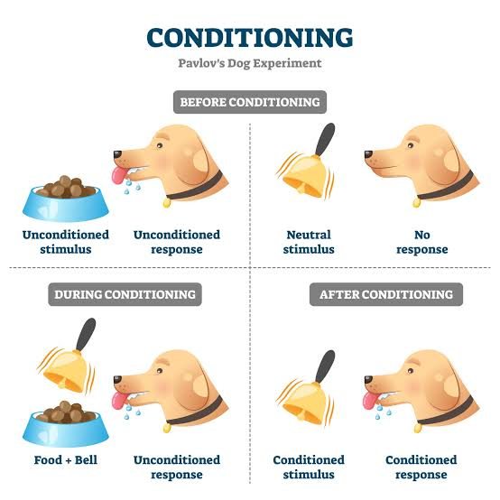
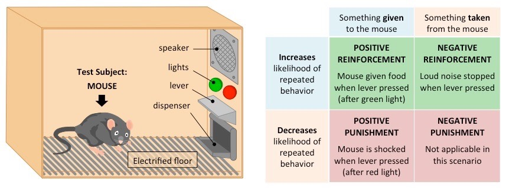

How do we learn from experience, how does the mind process information, and why do our thoughts, memories and decisions sometimes work differently from what we expect?
Imagine Maya during one ordinary school day.
Maya hears the notification sound from her phone and immediately feels the urge to check it.
The sound did not always produce that reaction.
How could an association have been learned?
Maya starts completing revision questions every evening because each completed set earns points in a study app.
Why might the consequence of a behaviour make that behaviour more likely to happen again?
Maya sees a successful student using flashcards every day and notices that teachers praise the student’s preparation.
Maya begins using flashcards too.
How can people learn by observing other people?
A week later, Maya tries to remember what she learned in class.
She remembers some information accurately, forgets other information and reconstructs parts of the lesson using what she already knows.
Why is memory not simply a perfect recording of experience?
Psychologists study both learning and cognition.
Learning asks how experience can produce changes in behaviour or knowledge.
Cognition asks how mental processes allow us to process, interpret, store and use information.
These processes are connected: what we learn can influence how we think, and how we think can influence what and how we learn.
This unit has two connected areas.
How do people learn, think and make decisions — and how can behaviour sometimes be changed?
We will investigate learning through association, consequences and observation.
We will also investigate how schemas, different modes of thinking and cognitive biases can influence cognition, behaviour and decision-making.
How does memory work, what influences it, and can it be improved?
Psychologists study cognitive processes such as attention, memory, perception, thinking and language.
In this course, our main cognitive process will be memory.
We will investigate memory from biological, cognitive, cultural and environmental perspectives and examine strategies that may improve it.
Part 1 asks how learning and thinking operate.
Part 2 takes one cognitive process — memory — and investigates it in greater depth.
Learning does not happen through one single process.
Psychologists have developed different explanations for how experience can influence behaviour.
Events that repeatedly occur together can become associated.
Eventually, one event may produce a response that originally depended on another event.
What happens after a behaviour can influence whether that behaviour becomes more or less likely to happen again.
People can learn by observing models, noticing what they do and seeing the consequences of their behaviour.
These processes provide different explanations for learning.
A major skill in this unit is identifying which learning process actually explains the behaviour in a particular situation.
If psychologists understand a process involved in learning, they can ask whether that process can be deliberately used to influence behaviour.
identify the behaviour
↓
identify the learning process
↓
change something relevant to that process
↓
observe whether behaviour changes
In this unit, we will investigate this especially through operant conditioning and social learning theory.
But a strategy sounding reasonable is not enough.
Psychologists still need evidence that behaviour actually changed.
Learning explains only part of human behaviour.
Psychologists also investigate how people organise information, make judgements and reach decisions.
Previous experience can help form mental frameworks that influence how new information is interpreted, remembered and used.
Some thinking is fast and automatic, while other thinking is slower and more deliberate.
Psychologists ask whether distinguishing these modes helps us understand thinking and decision-making.
Human judgement can show systematic patterns of error.
Psychologists investigate how cognitive biases can influence the decisions people make.
A schema may influence what information comes to mind.
Fast processing may rely on readily available information.
A judgement may then become systematically biased.
The theories are not interchangeable, but different cognitive processes can contribute to the same decision.
How can learning occur through associations between stimuli?
How can consequences influence behaviour — and how can operant conditioning be applied to change behaviour?
How can observing other people explain learning — and how can social learning be applied to explain and change behaviour?
How can schemas influence cognition and behaviour?
How useful is dual processing theory for understanding thinking and decision-making?
How can cognitive biases influence decision-making?
Psychologists study several cognitive processes, including attention, memory, perception, thinking and language.
To investigate a cognitive process properly, however, psychologists need to do more than describe what it is.
They can ask what happens biologically, whether models help explain the process, how culture and environment may influence it, and whether the process can be improved.
In this course, memory will be our main cognitive process.
We will use memory to investigate how one cognitive process can be understood from several different perspectives.
Imagine Maya attends a school event.
A week later, she tries to remember what happened.
Her memory is incomplete, some details are clearer than others, and parts of what she remembers may have been influenced by later information.
What biological processes or structures might contribute to Maya’s ability to form or retrieve the memory?
Can a cognitive model help explain how information was processed, stored or retrieved?
Could cultural experience influence what Maya notices, remembers or reconstructs?
Could something in Maya’s environment influence how well information is remembered?
Notice that these questions do not compete to find one universal cause of memory.
They investigate different influences on the same cognitive process.
How can biological factors influence memory?
Cognition depends on biological systems.
We will investigate the role of one or more biological factors in memory and consider what biological evidence can — and cannot — tell us about a cognitive process.
How useful are cognitive models for understanding memory?
A cognitive model is a simplified representation of how a cognitive process may work.
Models can help psychologists organise observations and generate predictions, but a useful model does not need to reproduce every detail of the real mind.
We will therefore ask not only what a model proposes, but also what the model helps explain and where its limitations appear.
How can culture influence memory?
People do not remember information in a cultural vacuum.
Experience, expectations and culturally shared knowledge may influence how information is interpreted and remembered.
We will investigate the role of one or more cultural factors in memory.
How can the environment influence memory?
Memory takes place under particular conditions.
Features of the environment may influence how information is encoded or retrieved.
We will investigate the potential influence of one or more environmental factors on memory.
Understanding memory also creates an applied question:
Can psychological knowledge help people remember more effectively?
understand the cognitive process
↓
identify something that may influence it
↓
apply a strategy
↓
measure whether performance improves
We will investigate one or more strategies designed to improve memory.
The important question is not simply whether a strategy sounds useful.
Psychologists need evidence that the strategy actually improves the cognitive process being measured.
What role can biological factors play in memory?
How valuable are cognitive models for understanding memory?
How can cultural factors influence memory?
How can environmental factors potentially influence memory?
What strategies might improve memory, and what evidence would show that they work?
Our class practical in Learning & Cognition will use an experiment.
An experiment allows psychologists to manipulate an independent variable and measure its effect on a dependent variable while attempting to control other influences.
In this unit, this gives us a way to investigate a question about learning or cognition rather than simply discussing it.
If we change one factor, does it produce a measurable change in learning, thinking or memory?
When you encounter a theory, study or scenario in this unit, do not stop at naming the topic.
Identify the specific behaviour, learning process, thought, decision or memory outcome.
Identify the relevant learning or cognitive process rather than simply naming a broad topic.
Explain the mechanism connecting the psychology to the behaviour or cognition.
Consider what was measured, what the research found and whether the evidence supports causation, association or a more limited conclusion.
Consider whether biological, cognitive, cultural or environmental factors could also contribute.
Identify the relevant process, apply a strategy and ask what evidence would demonstrate that it actually worked.
How do experience and mental processes shape what we learn, think, remember and do — and how can psychology help us understand or change these processes?
Every theory, study, activity and application in this unit helps us answer part of that question.
Classify each unfamiliar real-life example. Some cases are genuinely difficult — place them where you think they fit, then read the justification carefully.
Learning through association: how a neutral stimulus comes to trigger a response it never triggered before.

Pavlov's classical conditioning: a previously neutral bell becomes associated with food and eventually triggers salivation on its own.
Your phone buzzes — and you feel a jolt of anticipation. The buzz itself is just a sound. It only excites you because it has been paired, hundreds of times, with messages from people you care about.
Ivan Pavlov discovered the same mechanism by accident while studying digestion: dogs began salivating not just to food, but to signals that food was coming — the sight of the bowl, the footsteps of the technician, a tone. He called this classical conditioning: learning through association between two stimuli that occur together.
The recipe is always the same: a stimulus that already produces a reflex response is paired with a neutral stimulus. After enough pairings, the neutral stimulus produces the response on its own.
Using the phone-buzz example:
| Term | Definition | Example |
|---|---|---|
| UCS — Unconditioned Stimulus | Triggers a response naturally, with no learning | The exciting message |
| UCR — Unconditioned Response | The natural, unlearned reaction to the UCS | Anticipation/excitement at the message |
| NS — Neutral Stimulus | Produces no meaningful response until paired with the UCS | The buzz before pairing |
| CS — Conditioned Stimulus | The former NS, after pairings with the UCS | The buzz after learning |
| CR — Conditioned Response | Learned reaction to the CS alone | Jolt of anticipation at the buzz alone |
Sequence: NS + UCS → UCR (repeatedly) ... then ... CS alone → CR. The CR is usually similar to but weaker than the UCR.
To test whether emotional reactions such as fear could be conditionally learned in humans — specifically whether a child could be conditioned to fear a stimulus he did not originally fear.
“Little Albert B.”, a baby of approximately nine months at baseline, recruited from a hospital where his mother worked as a nurse. Albert was described as unusually calm and showed no fear of white rats, rabbits, dogs, masks or burning newspaper at baseline.
Emotional responses such as fear can be conditioned in humans through stimulus association. Phobias may therefore be learned in the same way as other behaviours — supporting a learning-based account of emotional problems.
Link: The study demonstrates exactly the mechanism taught above — a neutral stimulus became a conditioned stimulus producing a conditioned emotional response — showing that classical conditioning applies to human emotion, not just dog salivation.
Check your understanding of classical conditioning concepts.
For each unfamiliar scenario, work out the elements of classical conditioning. Commit to an answer before checking — the feedback explains the learned association in each case.
How consequences shape behaviour: reinforcement increases behaviour, punishment decreases it — and positive/negative means adding/removing.

An operant conditioning chamber illustrates how consequences can increase or decrease behaviour. Reinforcement increases behaviour; punishment decreases it. Positive means adding a stimulus, while negative means removing one.
Classical conditioning explains how we come to anticipate events. But much learning is about what happens after we act. Edward Thorndike observed that cats escaping a puzzle box stopped making ineffective movements and kept effective ones — actions followed by satisfying outcomes are stamped in. B.F. Skinner developed this into operant conditioning: behaviour operates on the environment, and its consequences determine whether it is repeated.
A real-life thread: a student answers a question in class and the teacher nods warmly. Next lesson, that hand goes up faster. A different student answers and is mocked by classmates. That hand stays down. Same behaviour, opposite futures — because the consequences differed.
Two things determine the type of consequence:
Positive means adding a stimulus; negative means removing one. Reinforcement increases behaviour; punishment decreases it.
| Add a stimulus (+) | Remove a stimulus (−) | |
|---|---|---|
| Behaviour increases | Positive reinforcement — Praise after studying increases studying. | Negative reinforcement — A seatbelt alarm stops when you buckle up, increasing buckling. |
| Behaviour decreases | Positive punishment — A fine after speeding reduces speeding. | Negative punishment — Losing phone access after late-night scrolling reduces scrolling. |
Notice that in every case the classification depends on two facts: what happened to the stimulus (added/removed), and what happened to the behaviour (more/less). Both facts must be checked before labelling.
Check your understanding of reinforcement and punishment.
Classify each unfamiliar consequence into one of the four categories. For each item, identify both the behaviour change and what happened to the stimulus.
Moving beyond definitions: how operant conditioning is deliberately applied to increase or decrease target behaviors in real settings.
Work through this page from top to bottom. Read each section and complete the written activities as you reach them.
What to complete:
All students
HL students only
Write all your answers in ONE Word document. Use the headings and question numbers to organize your work.
Write your answers before revealing the model answers. Use the models afterward to check your understanding.
ManageBac: Upload ONE completed Word document (.docx). You do not need to carry out the behavior-change intervention or create your own graphs.
Knowing that consequences shape behavior means consequences can be engineered. A deliberate behavior-change plan has four steps:
The same logic applies to increasing behavior (such as studying or exercise) and decreasing it (such as late-night phone use or interruptions).
Write your own answer in your Word document before revealing the explanation.
Scenario. A student regularly checks their phone while studying. They want to reduce phone checking and increase the amount of time they spend studying without distractions.
Your task: Design a proposed behavior-change plan using operant conditioning. Answer the following six questions in your Word document. This is a proposed intervention, not a practical investigation you must carry out.
| Question | Instructions |
|---|---|
| 1. Target behavior | Identify the specific, observable behavior you want to change. |
| 2. Baseline | Explain how you would measure the behavior before introducing your plan. |
| 3. Strategy | Identify the consequence you would introduce or remove. Explain exactly when it would occur. |
| 4. Psychological explanation | Identify the relevant type of reinforcement or punishment and explain how the consequence is intended to change the behavior. |
| 5. Measuring success | Explain what data you would collect to determine whether the behavior changed. |
| 6. Evaluation | Identify one realistic limitation of your plan, explain why it matters, and suggest an improvement. |
Complete your own answers before revealing the model.
Compare your plan with the model. Check whether your behavior is measurable, your consequence is clearly explained, and your evaluation identifies a realistic limitation.
Paper 3 Practice — HL Students Only
Psychologists need evidence that a behavior-change strategy actually works. Graphs help researchers identify patterns, compare results, and evaluate what the findings support.
In this activity, you will learn to interpret two types of graphs and practice answering Paper 3-style questions.
HL students: Answer both questions in the same Word document as your earlier written work.
A line graph shows how a variable changes across an ordered sequence, usually time.
It makes trends, increases, decreases, and periods of stability easy to identify.
Connecting data points does not prove exactly what happened between measurements or establish what caused a change.
A student recorded how many distraction-free study sessions they completed each week. During Weeks 1–2, no rewards were offered. From Week 3 onward, the student received a preferred reward after completing each study session.
Teacher-created example data. Not findings from a published study.
Paper 3 Question 2: Pattern → Numerical Evidence → Interpretation → Conclusion
Analyze the findings shown in Graph 1 and state a conclusion about the effectiveness of the reward system.
1–2 marks: Limited or inaccurate analysis; attempted but irrelevant conclusion.
3–4 marks: Accurate but insufficiently developed analysis; conclusion not clearly linked to findings.
5–6 marks: Detailed analysis with a conclusion explicitly linked to the findings.
A bar graph compares numerical values across separate categories or groups.
It makes differences between categories easy to compare.
A bar graph may summarize complex data into a small number of values, so important information about individual observations may not be visible.
Researchers compared the average number of distraction-free study sessions completed per week by two groups of students. One group received rewards after completed sessions; the other did not.
Teacher-created example data. Not findings from a published study.
Paper 3 Question 1: Issue → Source Detail → Consequence for Interpretation
Explain one issue that limits the interpretation of the data in Graph 2.
Identify ONE genuine issue, describe it using a specific feature of the source, and explain why it limits interpretation.
Only the first issue is credited. Naming several limitations is less effective than explaining one properly.
SL students — Your Word document must include:
HL students — Your Word document must include:
Upload ONE Word document (.docx) to ManageBac.
Noah and Mia respond very differently to the same class rules. Use conditioning to explain what is happening and evaluate the teacher’s conclusion.
Scenario
A school wants students to arrive to class on time.
At first, teachers introduce a reward system. Each time a student arrives before the bell, they receive a point. Ten points can be exchanged for a homework pass. During the first few weeks, lateness decreases.
However, one student, Noah, begins arriving early mainly because he wants the homework passes. When the school suddenly stops giving points, Noah starts arriving late again.
Another student, Mia, has a different experience. Several times she arrives late and walks into class just as the teacher loudly criticises late students in front of everyone. After a few weeks, Mia begins to feel anxious whenever she hears the warning bell before class, even on days when she is already near the classroom.
“The reward system permanently taught students to be punctual, and Mia chooses to feel anxious because she knows she might be criticised.”
— the teacher’s conclusion
The prompt: Using your knowledge of conditioning, explain the students’ behaviour and evaluate the teacher’s conclusion.
Students need to:
Keep this concise. Do not solve the whole scenario here.
Noah → operant conditioning: his early arrival is followed by points, and his lateness returns when the points stop — behaviour shaped by consequences.
Mia → classical conditioning: the warning bell becomes associated with public criticism and begins eliciting anxiety on its own.
For each conclusion, identify the scenario evidence that led you there.
DO NOT JUST LABEL THE PROCESS. The useful pattern is:
DETAIL → PSYCHOLOGY → HOW / WHY
Noah’s early arrival is behaviour followed by a desirable consequence: points exchangeable for a homework pass. This is positive reinforcement — positive because something is added, reinforcement because the behaviour becomes more likely.
When the points stop, the consequence maintaining his punctuality disappears, so the behaviour is no longer strengthened in the same way — which explains his return to lateness and challenges permanence. Short-term improvement while the reward runs does not establish lasting change.
Map the sequence: NS (warning bell before conditioning) → UCS (public criticism) producing UCR (anxiety/distress) → repeated association → CS (warning bell after association) eliciting CR (anxiety to the bell, even near the classroom).
The conditioned response can be elicited automatically rather than deliberately chosen: Mia may know she is unlikely to be criticised, yet the bell still triggers the learned response. Classical conditioning concerns associations and elicited responses, not choices.
“Permanently taught students to be punctual” — too strong. Noah’s return to lateness suggests behaviour maintained by the added consequence rather than permanently internalised.
“Mia chooses to feel anxious” — poorly supported. Her anxiety fits a conditioned emotional response to the bell, not a deliberate choice.
Qualification: conditioning need not be the ONLY influence — social pressure, habit, mood or expectations could also contribute.
☐ identifies operant conditioning for Noah and classical conditioning for Mia
☐ uses specific scenario details for each process
☐ explains how reinforcement operated and why its removal changed Noah’s behaviour
☐ applies the NS/UCS/UCR/CS/CR sequence to Mia
☐ explains the automatic rather than chosen conditioned response
☐ evaluates both parts of the teacher’s conclusion with qualification
Noah’s behaviour can be explained through operant conditioning because arriving early was followed by a desirable consequence. Receiving points that could be exchanged for a homework pass is positive reinforcement: something desirable was added after punctual behaviour and the behaviour increased. When the school stopped providing the points, Noah no longer received the consequence that had been strengthening his early arrival, which helps explain why his lateness returned. Therefore, the teacher’s claim that the system permanently taught punctuality is too strong.
Mia’s response is better explained through classical conditioning. The teacher’s loud criticism can naturally produce anxiety, while the warning bell would not originally produce the same response. After the bell and the situation surrounding lateness repeatedly became associated with criticism, the bell could become a conditioned stimulus that triggers anxiety on its own. Mia therefore does not necessarily choose to become anxious; the response may be automatically elicited by the learned association.
The scenario consequently demonstrates two different forms of learning, but it does not show that conditioning is the only factor influencing either student.
Learning by watching others: the processes of observational learning, modelling, identification and vicarious reinforcement — plus the research that made the theory famous.
A younger brother has never crashed a car, never been fined and never driven at all — yet he already drives like his older sister: same mirror-checking habits, same shortcuts. He learned by watching.
Albert Bandura argued that classical and operant conditioning alone cannot explain how rapidly humans acquire complex social behaviour. Much of what we know — speech, manners, aggression, fashion, study habits — we learn by observing models. Social Learning Theory (SLT) proposes that learning can occur through observation and imitation, even with no direct reinforcement of the learner.
The four processes of observational learning
Notice the behaviour.
Remember what was observed.
Be capable of performing it.
Have a reason to perform it.
Observation alone is not enough. For learning from a model to occur, four processes must operate:
SLT keeps conditioning concepts (reinforcement matters) but places them inside a cognitive framework: expectations, memory representations and self-perceptions mediate whether observation changes behaviour. That makes SLT a bridge between the conditioning unit-section and the cognition section.
Acquisition is learning a behaviour through observation; performance is actually demonstrating it. The four processes above describe how a behaviour is acquired. Whether it is then performed depends on the observer's motivation: the consequences they expect — direct reward, vicarious reinforcement or punishment — and whether they have the opportunity to reproduce it.
This is why observed imitation is good evidence that learning has taken place, while the absence of imitation is not evidence that learning has not. A child may have acquired a behaviour completely and simply have no reason, or no opportunity, to perform it. Researchers therefore read performance as evidence of learning only when the observer is motivated and able to act.
Children observe either an adult behaving aggressively toward an inflatable doll or an adult playing quietly with other toys.
Attempt both questions before revealing either model answer — commit to your prediction first.
To test whether children would imitate aggressive behaviour demonstrated by an adult model, and whether the model's sex and the child's sex affected imitation.
72 children (36 boys, 36 girls) aged roughly 37–69 months from Stanford University nursery school.
Note: the 1961 experiment varied only what the child observed — an aggressive model, a non-aggressive model or no model. Children were not rewarded or punished for their own behaviour, and the consequences given to the model were not manipulated. Vicarious reinforcement was investigated in Bandura's later studies, not in this experiment.
The experiment demonstrated that children can acquire and reproduce aggressive behaviours through observation. This supports social learning theory by showing that direct reinforcement of the learner is not necessary for imitation to occur.
These studies came later and tested new questions of their own; their findings belong to the follow-up research rather than to the 1961 experiment.
Bandura, Ross and Ross (1963) extended this research by investigating children's imitation of aggressive models presented through film and cartoons. Their findings showed that observational learning was not limited to watching a model physically present in the room.
In later research, Bandura (1965) investigated how the consequences experienced by a model affected children's behaviour. Children were less likely to reproduce aggressive behaviour when they had observed the model being punished. However, when offered incentives to reproduce the behaviour, children could demonstrate actions they had previously observed.
This is the acquisition–performance distinction in action: the children had learned the actions, but whether they performed them depended on what they expected would happen next.
Link: Every stage of the experiment maps onto the theory: attention (distinctive display), retention (novel phrases reproduced later), reproduction (children physically capable), motivation and identification (same-sex advantage). It remains the classic evidence that learning can be observational.
Check your understanding of Bandura's social learning theory.
Put the stages of observational learning into the correct order, then check how the mechanisms connect.
Applying modeling, identification, and reinforcement processes to explain why behaviors spread — and to design interventions that change them.
Social Learning Theory helps explain how people acquire behaviors by observing others, even without experiencing the consequences themselves.
A student begins using a new slang phrase. Friends notice it, remember it, and may copy it, particularly if they admire the student or expect social approval.
A child watches a parent react fearfully to dogs and later avoids dogs themselves. The child may have learned a fearful response through observation without being bitten.
Characters and influencers can act as symbolic models. Viewers may imitate observed behaviors, depending on identification, expected consequences, and opportunities to reproduce them.
A student sees a classmate receive praise for helping someone. Observing that positive consequence may increase the student’s motivation to behave similarly.
Evidence note: Bandura, Ross, and Ross (1963) found that children imitated aggressive models shown on film and in cartoons, which shows that observational learning does not require a model who is physically present. It does not show that media exposure inevitably produces aggression.
These examples describe possible mechanisms rather than guaranteed outcomes. Learning and performance are also distinct: an observer may acquire a behavior and still not reproduce it.
Apply Your Understanding
A student watches a popular classmate begin volunteering at school. Several other students start volunteering, but some do not.
Using Social Learning Theory, explain why students might respond differently to the same model.
Think about attention, identification, motivation, and the difference between learning and performing a behavior. Answer before revealing the model.
Students who notice and admire the classmate may be more motivated to imitate the volunteering behavior, particularly if they expect positive outcomes. Others may pay less attention, identify less strongly with the model, or see little personal benefit. Some students may understand how to volunteer but lack the opportunity or motivation to participate. SLT therefore explains why observing the same model does not guarantee identical behavior.
If people can learn through observation, psychologists can design interventions that make helpful behaviors easier to observe, remember, and reproduce. Four principles can guide this process.
Four Principles for Designing an SLT Intervention
Select someone credible and relatable to the intended audience.
Make the desired behavior clear, observable, and possible to remember.
Allow observers to see positive outcomes associated with the behavior.
Provide opportunities, skills, and motivation to reproduce the behavior.
These principles can inform an intervention, but they do not guarantee that behavior will change.
Interventions in Practice
Reading role models. The intervention aims to make reading visible through models students respect, targeting attention and identification.
Senior students mentoring younger students. Older peers demonstrate study routines that are attainable and easy to observe, targeting attention, retention, and reproduction.
Anti-bullying programs. Influential students are trained to defend victims publicly, so bystanders see prosocial behavior being respected, targeting vicarious reinforcement.
Workplace safety demonstrations. Respected staff demonstrate safe procedures step by step, and observers see safe practice being approved, targeting attention, retention, and reinforcement.
Each example is designed to target a particular mechanism. Whether an intervention actually works still has to be demonstrated.
Apply Your Understanding
A school hires a celebrity to promote reading, but students’ reading habits do not change. Later, a Year 13 student starts a book club, and reading participation increases.
How could Social Learning Theory explain these different outcomes? What additional information would you need before concluding that identification caused the difference?
Separate what the scenario establishes from what you would need to find out. Answer before revealing the model.
Students may identify more strongly with a relatable peer than a distant celebrity, making them more likely to attend to and imitate the model. However, the scenario does not establish that identification caused the increase. The book club may also have provided more opportunities to read, greater social encouragement, or easier access to reading activities. To investigate identification, researchers could ask students how strongly they related to each model and examine whether this was associated with changes in reading behavior.
Checking Whether an Intervention Works
A school introduces peer role models to encourage students to read more frequently.
What would you measure before and after the intervention? Why would an increase in reading alone not prove that the intervention caused it?
Think about measurement and comparison before revealing the model.
Researchers could measure students’ reading frequency or time spent reading before introducing the peer models, then measure the same behavior afterward. An increase would suggest improvement, but other influences, such as teacher encouragement or new reading assignments, could explain the change. A suitable comparison group would strengthen the evaluation.
Learning a behavior does not guarantee performing it. An observer may remember what was demonstrated but lack the motivation, confidence, ability, or opportunity to reproduce it.
Competing models. Other models may show the opposite behavior more often or more vividly, so one demonstration may not be the strongest influence on what students observe.
Motivation. Observers may acquire a behavior but see little reason to perform it. Expected consequences shape whether learning becomes action.
Capability and opportunity. Demonstration does not supply skills the observer cannot yet perform, and imitation requires a chance to try the behavior.
Ethical considerations. Deliberately exposing people to models of harmful behavior is difficult to justify outside controlled research, which limits what an intervention can do.
Unsuccessful imitation is therefore not evidence that observational learning did not occur. The behavior may have been learned and not performed.
SLT keeps reinforcement, but it places learning inside the observer. Attention determines what is noticed, retention depends on a stored mental representation of the behavior, and performance depends on expected outcomes. Reinforcement works vicariously: the observer forms an expectation about what will happen to them by watching what happens to the model, and anticipated consequences guide whether they act. Because attention, representation, expectation, and anticipated consequences all stand between the model and the behavior, SLT goes beyond a simple stimulus–response account and bridges behaviorist and cognitive psychology.
Apply social learning theory to a school scenario.
Why do several students begin copying Hana while Daniel, who watches her just as often, does not? Use Social Learning Theory to explain the difference and evaluate the teacher’s conclusion.
Complete both activities in ONE Word document (.docx).
1. Scenario Application
Explain Hana’s and Daniel’s different behaviors using Social Learning Theory, and evaluate the teacher’s conclusion.
2. Paper 2 — Section B (15 marks)
Evaluate Bandura’s research using at least two of the specified psychological concepts.
Write your responses before revealing the model answers. Upload your completed document to ManageBac.
Scenario
A secondary school wants students to participate more actively in lessons.
In one Year 9 class, a confident and popular student named Hana regularly answers questions, explains her thinking and admits when she makes mistakes. The teacher responds positively and often praises Hana for explaining her reasoning rather than simply getting the correct answer.
Over the next month, several students begin copying Hana. They raise their hands more often, explain their answers in a similar way and become more willing to admit mistakes.
However, another student, Daniel, watches Hana just as often but rarely participates. Daniel says that Hana is “nothing like me” and worries that classmates will laugh if he gives a wrong answer.
“Everyone who observes a successful model will eventually copy that person.”
— the teacher’s conclusion
The prompt: Using your knowledge of Social Learning Theory, explain the students’ behavior and evaluate the teacher’s conclusion.
Build your explanation around three questions:
Use specific details from the scenario to explain the relevant psychological processes.
Develop a connected argument rather than answering the three questions separately.
Complete your response before revealing the model answer. Compare your explanation and evaluation with the model.
Social Learning Theory can explain why several students begin behaving like Hana. Hana acts as a model whose behaviour is visible to the class. Students can attend to how she participates, retain a mental representation of the behaviour and later reproduce it themselves. Because Hana is popular and confident, some students may also identify with her, making imitation more likely.
Vicarious reinforcement may further increase imitation. Students see Hana receive praise for explaining her reasoning, so they observe a positive consequence without having to experience it themselves. This can increase their motivation to behave similarly.
Daniel shows why observation does not automatically produce imitation. Although he watches Hana, he reports weak identification with her and expects classmates might laugh if he makes a mistake. These anticipated consequences may reduce his motivation to perform the observed behaviour. He may therefore have learned what Hana does without reproducing it.
The teacher’s conclusion is consequently too absolute. Social Learning Theory predicts that observational learning and imitation depend on processes such as attention, retention, reproduction, motivation and identification. Observing a successful model can influence behaviour, but observation alone does not guarantee that everyone will copy the model.
HL Exam Skills — Paper 2
Social Learning Theory | Research Evaluation | 15 marks
In Paper 2 Section B, you critically discuss a research study using psychological concepts. You must refer to specific evidence from the source material and develop an argument rather than simply describe the study.
Adapted research summary: Bandura, Ross, and Ross (1961)
Psychologists Albert Bandura, Dorothea Ross, and Sheila Ross investigated whether children would imitate aggressive behavior after observing an adult model.
The study involved 72 children, aged approximately 3–6 years, from Stanford University’s nursery school. There were equal numbers of boys and girls. Before the experiment, the children were assessed for their existing levels of aggression. Researchers used these assessments to help distribute children across the experimental conditions.
Children were assigned to one of three conditions:
The researchers also varied whether the adult model was male or female.
After exposure to the model, children experienced a mildly frustrating situation in which attractive toys were made unavailable. They were then taken to another room containing toys, including a Bobo doll. Their behavior was observed and recorded using predefined categories, including imitative physical and verbal aggression.
The researchers found that children exposed to the aggressive model displayed substantially more imitative aggressive behavior than children in the non-aggressive and control conditions. Some differences were also observed according to the sex of the child and the adult model.
The researchers concluded that aggressive behavior could be acquired through observation without requiring direct reinforcement of the child.
Adapted for classroom practice from Bandura, Ross, and Ross (1961), “Transmission of aggression through imitation of aggressive models.” This is not an official IB examination source.
Paper 2 — Section B [15 marks]
Discuss the research study presented in the source material with reference to at least two of the following concepts:
Bias · Causality · Measurement · Responsibility
Remember: Concept → Source Evidence → Analysis → Evaluation
Bandura, Ross, and Ross’s (1961) experiment provides evidence that children can acquire aggressive behavior through observation. However, the strength of its conclusions depends on how effectively the research establishes causality, measures aggression, and handles the responsibility of studying vulnerable children. These concepts help evaluate both the contribution and the limitations of the study.
The concept of causality concerns whether one variable produces changes in another. Bandura and colleagues used an experimental design in which children were exposed to an aggressive model, a non-aggressive model, or no model. This allowed the researchers to compare subsequent behavior across different conditions. The use of a control group strengthened the investigation because it provided a comparison for behavior occurring without exposure to an adult model. Furthermore, assessing children’s existing aggression before the experiment helped reduce the possibility that pre-existing differences explained the results.
Children who observed the aggressive adult subsequently displayed more imitative aggressive behavior. This supports the interpretation that exposure to an aggressive model contributed to their behavior. Nevertheless, the study does not establish that observational learning alone explains aggression outside the experiment. The artificial setting, unusual inflatable doll, and immediate observation period limit what can be concluded about whether children would imitate aggression in ordinary social situations or over longer periods. Thus, the experiment offers relatively strong evidence of a short-term causal effect under controlled conditions, but its broader implications require caution.
The concept of measurement also raises important questions. The researchers recorded observable behaviors, including physical and verbal aggression, using predefined categories. This made it possible to compare participants systematically rather than relying entirely on general impressions. In particular, the observation of behaviors resembling those demonstrated by the adult provided evidence relevant to imitation.
However, aggression is a complex psychological construct. Striking an inflatable doll in a playroom may not have the same meaning as deliberately harming another person. The measurement therefore captures particular observable aggressive actions rather than every aspect of real-world aggression. Some children may also have interpreted the adult’s actions as acceptable play within the experimental setting. Consequently, the recorded behavior is useful evidence of imitation, but its construct validity as a measure of everyday aggression is less certain.
The study can additionally be considered through responsibility. Exposing young children to aggressive behavior raises ethical questions, particularly because the children could not provide fully informed consent themselves. Researchers must consider whether the scientific benefits justify possible distress or undesirable behavioral effects. This does not invalidate the findings, but it highlights the responsibility involved in studying behavior among vulnerable participants.
Overall, Bandura and colleagues provided important experimental evidence that observing an adult can influence children’s immediate aggressive behavior. The controlled comparisons strengthen causal interpretation, while systematic observation provides measurable evidence of imitation. Nevertheless, limitations concerning the meaning of the measured behavior, the artificial setting, and ethical responsibility restrict how confidently the findings can be generalized. The study therefore supports observational learning as one explanation of aggression, rather than a complete explanation of aggressive behavior.
This is an illustrative high-markband response, not an officially graded IB answer.
Your Word document must include:
Upload ONE Word document (.docx) to ManageBac.
How organized mental frameworks built from experience shape what we notice, understand and remember — usually efficiently, sometimes inaccurately.
How schemas work
Knowledge acquired through earlier experiences.
An organized mental framework.
Predictions about what is likely.
Information is selected and interpreted.
Influences understanding, memory, or actions.
A schema is an organized mental framework representing knowledge about an object, situation, person or event, built up through experience.
Your restaurant schema contains the usual sequence — being seated, menus, ordering, a server, paying at the end — plus typical roles (server, chef, customer) and typical sequences. You have never been to most restaurants before, yet you know how to behave in a new one almost instantly. One framework, applied across countless specific cases.
Schemas matter because they:
Schemas are not fixed. As people encounter new experiences, they can interpret information using their existing schemas or modify those schemas when their expectations no longer fit.
Jean Piaget described two important processes involved in adapting knowledge: assimilation and accommodation.
Assimilation occurs when new information is interpreted or incorporated using an existing schema without substantially changing that schema.
Example: You visit a restaurant you have never been to before. A server gives you a menu, takes your order, and brings your food. Although the restaurant is unfamiliar, your existing restaurant schema helps you understand what is happening and how to behave.
Accommodation occurs when an existing schema must be modified, or a new schema developed, because the new experience cannot be adequately understood using existing expectations.
Example: You visit a restaurant where customers order using a touchscreen, collect their own food, and leave without interacting with a server. Your usual restaurant schema does not fully match this experience, so you adjust your expectations to recognize that restaurants can operate in different ways.
Assimilation: New experience → Existing schema
Accommodation: New experience → Schema modified or developed
The distinction concerns how information is processed and whether the schema changes — not simply whether an experience is familiar or unfamiliar. An unfamiliar situation can still be assimilated when existing expectations are adequate; accommodation happens only when the existing schema cannot adequately handle the new information.
Answer both parts before revealing the model answer.
Maya has always traveled on buses where passengers pay the driver when boarding.
A. Maya takes a bus in another city and immediately knows where to pay because the system works in the same way. Explain which process is illustrated.
B. Maya later visits a city where passengers must purchase tickets at a machine before boarding. After initially expecting to pay the driver, she learns the new system and changes her understanding of how bus travel can work. Explain which process is illustrated.
A — Assimilation: Maya interprets the unfamiliar bus journey using her existing schema. The experience fits her established expectations, so she does not need to substantially modify them.
B — Accommodation: Maya encounters a system that does not fit her existing expectations. She modifies her understanding to recognize that payment procedures differ between bus systems. This represents accommodation because her existing schema is adjusted in response to new information.
Assimilation and accommodation help explain how schemas can remain useful while also adapting to new experiences. Assimilation allows people to interpret information efficiently using existing knowledge, while accommodation allows that knowledge to change when it no longer adequately explains an experience.
These processes concern the development and modification of schemas. They should not be confused with the separate question of how existing schemas may influence memory accuracy.
The five stages above form one continuous process, not five separate steps. Walk through it with a noisy party: previous parties built a conversation schema; entering the new party you expect fragments of speech amid music; this expectation drives interpretation — your brain fills missing sounds using the schema, so you “hear” sentences that were partly masked; the output is both cognition (understanding despite noise) and behavior (turning your better ear toward the speakers).
The same chain explains why you can read messy handwriting (“I cpuld raed tihs”), why a doctor sees symptoms where you see trivia, and why an unfamiliar culture's routines feel confusing — no schema exists yet to guide processing.
Notice where the chain can fail: the schema supplies whatever the situation usually contains, whether or not it is present this time. That is the mechanism behind both efficient understanding and confident error.
Imagine waiting briefly in an unfamiliar office. Later, someone asks you to describe everything you saw.
Commit to a prediction before revealing the model answer.
To test whether schemas shape what people notice, remember and mistakenly report about a real place. In particular, would participants “remember” objects that an office should contain but that were not actually there?
Brewer and Treyens argued that the office schema did two things: it guided what participants attended to and encoded, and it supplied plausible content when memory was incomplete. Memory for a familiar kind of place is therefore partly a reconstruction from knowledge rather than a replay of a recording.
What the study shows: in this setting, expectations measurably biased what people reported — most clearly in the intrusion of expected-but-absent objects such as books.
What it does not show: that schemas make memory generally unreliable, or that every error came from schema-driven reconstruction. Much of what participants reported was accurate, and the design cannot establish whether a false report arose while viewing, while storing, or while retrieving.
Observation versus explanation: the observation is that participants reported books that were not there. The explanation is that schema-based reconstruction filled a gap. The data are consistent with that explanation, but they do not prove it.
Both faces come from the same mechanism. A schema is a shortcut, and a shortcut is useful precisely because it ignores some detail.
Useful — schemas help people:
Distorting — expectations can:
This does not mean that schemas make memory inaccurate. Most of the time the shortcut works: the expected object usually is there, and the schema speeds up recognition of what is present. Inaccuracy is a risk that rises under particular conditions — brief exposure, ambiguous information, delayed testing, leading questions — not an automatic consequence of having a schema.
Answer both questions before revealing either model answer.
Apply schema theory to a real-world scenario.
Before each answer is revealed, commit to a prediction from schema theory. Then check whether the evidence matched your reasoning.
Why memory is better described as an active reconstruction than a recording — and how existing knowledge can shape what comes back when we remember.
How reconstruction works
An event or piece of information is encountered.
Some of that information is processed into memory.
Information is maintained over time.
Remembering may be guided by existing knowledge, expectations and available cues.
The remembered account is assembled from retrieved information and may differ from the original experience.
Remembering is not simply replaying an exact recording. Existing knowledge and expectations can influence how information is retrieved and reconstructed. This does not mean every memory is inaccurate.
This sequence summarizes one important process. It is not a complete model of every memory.
Retell last weekend to three different people and the versions differ — shortened here, expanded there, shaped by what each listener asks about. Nobody is lying; remembering is an active process, and it usually produces a broadly accurate account.
Bartlett described remembering as effort after meaning: we retain fragments of experience together with the knowledge frameworks — schemas — built from earlier experience. At retrieval we assemble an account from those fragments, our knowledge, our expectations and the cues available. That is why memory is described as reconstructive rather than reproductive.
Four outcomes are worth separating:
Reconstruction therefore supports meaningful remembering as well as producing errors. Filling gaps is what makes fragmented experience usable. Reconstruction does not mean that memories are rebuilt from scratch every time, or that accurate remembering is impossible. The five stages above are a simplification, and much of the evidence discussed here comes from laboratory tasks rather than everyday events.
To investigate whether memory for unfamiliar material is changed by existing knowledge and cultural expectations — that is, whether remembering is reconstructive rather than a literal copy of what was presented.
Bartlett argued that participants made sense of the story using knowledge and expectations drawn from their own culture, so remembering involved reconstruction rather than reproduction. The changes were not random: they moved consistently toward familiar, coherent, culturally expected content.
Observation versus interpretation: the observation is that reproductions differed from the original in predictable directions. The interpretation is that schemas guided that reconstruction. The data are consistent with the interpretation, but they do not prove that a particular schema caused a particular change.
Gauld and Stephenson argued that Bartlett's open-ended interview style invited error. Using the same story, they compared ordinary instructions with instructions emphasizing strict accuracy, and found that the accuracy emphasis reduced error rates.
What this qualifies: if distortion falls when people are told that accuracy matters, the amount of error is at least partly condition-dependent. Bartlett's results do not show that reconstruction inevitably produces large inaccuracies. But reduced is not eliminated: errors still occurred, and nothing here shows that careful instructions guarantee accurate memory.
Evaluating their method: the comparison was controlled and used Bartlett's own materials, which strengthens the case that instructions mattered. However, the setting was artificial, and instructions may change how carefully people report a memory rather than what they actually remember. Replications have also been mixed — Bergman and Roediger (1999) found Bartlett-style distortions regardless of whether instructions were lenient or strict — so the effect is best treated as evidence that distortion varies with conditions, not as a refutation of Bartlett.
Commit to an answer before revealing the model answer.
Reach a conclusion that accounts for both studies before revealing the model answer.
Check your understanding of how Bartlett's retellings changed.
Memories are not always recalled exactly as events occurred. In this activity, compare an original detail with how it was later remembered. Identify what changed and decide which form of reconstruction best explains the difference.
How to complete the activity
Three forms of reconstruction
Information is removed or simplified. A person recalls fewer details than were originally presented.
Certain details become more prominent. A particular feature is emphasized or exaggerated in the recollection.
Information is changed to fit existing knowledge or expectations. An unfamiliar detail is transformed into something more familiar or meaningful.
These categories describe patterns in recollections. They help you analyze what changed, but they do not prove that a particular schema caused an individual memory error. Conventionalization, where unfamiliar content is reshaped toward familiar cultural expectations, is one form of assimilation.
The retellings are teaching examples modeled on reconstruction patterns reported by Bartlett (1932), not verbatim participant transcripts.
Can schemas explain why Lena confidently remembers events that never happened? Develop an argument using psychological theory, evidence, and evaluation.
Teacher-created exam-style practice, not an official IB examination question.
Your Challenge
Read Lena’s experience and write one developed response explaining how schemas and reconstructive memory could account for her recollections.
Your answer must:
Submission: Write your response in ONE Word document (.docx) and upload it to ManageBac.
Complete your own response before opening the model answer.
Lena’s Scenario
Lena visits a café she has never been to before. The café works in an unfamiliar way: customers order from a touchscreen, collect their own drinks, and leave without speaking to a waiter.
Later that evening, Lena tells a friend about the visit. She confidently remembers being handed a menu by a waiter, and she says that the waiter brought her drink to the table. Neither event happened.
A week later, she tells the story again. This time she leaves out the touchscreen completely and describes the café as “basically like any normal restaurant.”
“Lena must not have been paying attention. If she had encoded the experience properly, her memory would be an accurate recording of what happened.”
— Lena’s friendPaper 1 — Section C-Style Question
“Discuss how schemas and reconstructive memory could explain Lena’s recollections, including the strengths and limitations of this explanation.”
Develop a connected argument using relevant psychological knowledge and specific evidence from the scenario. Evaluate the explanation rather than simply describing the theory.
Claim
What is your central explanation for Lena’s inaccurate recollections?
Evidence
Which specific details from the scenario support your explanation?
Analysis
How could Lena’s existing restaurant schema influence what she remembers? Distinguish possible influences during encoding from reconstruction during retrieval.
Evaluation
What does the scenario support, and what does it fail to establish? Could other factors contribute?
Judgment
How convincing is the schema-based explanation overall?
Use these questions to plan your argument. Do not write five disconnected paragraphs or simply answer each heading separately.
Lena’s recollections are best explained by the claim that remembering is reconstructive rather than reproductive. Her account contains details that fit a familiar café schema, and it loses the detail that did not fit. This does not prove that her schema caused the errors, but the pattern is consistent with reconstruction and it exposes the weakness in her friend’s claim that accurate encoding would produce an accurate recording.
Through earlier visits to cafés and restaurants, Lena is likely to have built a schema for that kind of setting: someone hands out menus, a waiter takes the order, and drinks arrive at the table. The café she visited did not work that way, but the schema would still supply expectations about what usually happens. Reconstruction means that retrieval assembles an account from fragments of the original experience together with general knowledge and current cues, so the result can be coherent without being a copy. When Lena describes the evening, being handed a menu and having a drink brought over fit her expectations even though no waiter served her.
Brewer and Treyens (1981) found a comparable pattern: participants who spent thirty-five seconds in a staged office remembered schema-consistent objects well and sometimes reported expected objects, such as books, that were not in the room. Their result supports the general claim that expectations about a familiar place can fill gaps in an account, although a reported item may also reflect a plausible guess rather than a genuinely remembered object.
The later retelling is equally informative. The touchscreen, the one feature that made the café unusual, disappears, and the visit becomes “basically like any normal restaurant.” Bartlett (1932) described remembering as an effort after meaning: people retain fragments and reconstruct a coherent account around them, and unfamiliar material is often dropped or converted into something more familiar, as when seal hunting became fishing in his retellings. Lena’s omission follows the same direction, because removing the touchscreen leaves a story that matches the restaurant script she already has. Bartlett used an unfamiliar folk tale and loosely standardized procedures, so his study supports the direction of the change rather than proving what happened in this particular case.
Lena’s confidence is not evidence that her account is accurate. A reconstructed memory can feel fluent precisely because it is coherent with what she expects, and Bartlett’s participants often remained confident after details had changed. Confidence indicates how strongly she believes the account, not how faithfully it reproduces the visit.
Her friend’s first claim, that Lena cannot have been paying attention, is possible but unproven. Attention during encoding does affect what is later available, and an unfamiliar ordering system might well have occupied her. The scenario, however, gives no information about where she looked or what she was doing, so inattention remains an assumption rather than a finding. Errors of the kind she made could also arise later, when the memory is reconstructed.
The second claim, that proper encoding would have produced an accurate recording, is too strong. If retrieval involves reconstruction, then well-encoded fragments can still be supplemented or reshaped by prior knowledge when the memory is recalled. That said, the friend is not entirely wrong: encoding quality matters, most everyday memories are broadly accurate, and reconstruction is not a license to assume that all recollection is distorted. Her error is the absolute form of the claim, not the suggestion that attention contributes.
Gauld and Stephenson (1967) qualify the schema account in a useful way. Using Bartlett’s own story, they found that instructions emphasizing strict accuracy reduced distortion, which suggests that the amount of error depends partly on conditions and on what a person believes the task requires. Lena’s retelling is also a social act: she may have been shaping the story into something a listener would recognize, and the unusual ordering system may simply have been forgotten. The scenario itself is a single anecdote with no independent record of the visit, so it cannot show whether Lena encoded the café inaccurately, reconstructed an accurate encoding inaccurately when she retold the story, or experienced both.
Overall, the schema-based explanation is convincing as an account of the pattern. It explains why the added details are exactly the ones a restaurant schema would supply, why the counter-schematic touchscreen disappears, and why confidence offers no reassurance. It also explains more of the evidence than her friend’s recording model, which cannot account for confident errors at all. What the scenario cannot do is establish causation, so the defensible judgment is that schema-driven reconstruction plausibly contributed to Lena’s errors, that her friend’s conclusion is unjustified in its absolute form, and that a fuller explanation would need evidence about what Lena attended to and how her account changed across retellings.
Read the model answer and identify how the argument is developed.
Central argument: the opening paragraph claims that remembering is reconstructive and that the pattern of Lena’s errors is consistent with schema influence, while noting that causation is not established.
Applications: the account of the invented menu and waiter shows schema-consistent additions, while the discussion of the missing touchscreen shows the removal of the detail that did not fit Lena’s expectations.
Research: Brewer and Treyens (1981) supports the claim that expected items can appear in recall, while Gauld and Stephenson (1967) qualifies the explanation by showing that distortion varies with conditions.
Limitation or alternative: the paragraphs on attention and on Gauld and Stephenson note that inattention, ordinary forgetting, and the social demands of retelling remain possible, and that a single anecdote offers no independent record of the visit.
Judgment: the closing paragraph weighs the explanation against the friend’s recording model and concludes that schema-driven reconstruction plausibly contributed but is not proven.
Upload ONE completed Word document (.docx) to ManageBac.
How automatic and deliberate thinking influence our judgments, decisions, and behavior — and what this distinction can and cannot explain.
Some judgments happen almost immediately, while others require sustained concentration. An experienced driver may recognize a developing hazard without consciously analyzing every detail, whereas someone learning to drive must think carefully about each action. Dual processing theory uses this distinction to explain two broad patterns of cognitive processing.
| Characteristic | System 1 — Automatic Processing | System 2 — Deliberate Processing |
|---|---|---|
| Speed and effort | Typically fast and relatively effortless | Typically slower and more effortful |
| Control | Often operates automatically, without conscious intention | Usually involves conscious attention and control |
| Examples | Familiar pattern recognition, practiced skills, intuitive judgments | Complex calculations, comparing evidence, unfamiliar problems |
| Cognitive demands | Can handle many familiar operations with limited conscious attention | Draws more heavily on limited attentional and working-memory resources |
These are typical differences, not absolute rules: thinking varies along continua of speed, control and effort, and many activities combine automatic and deliberate processing.
What the labels mean — and do not mean. “System 1” and “System 2” are theoretical descriptions of different processing characteristics — typically fast, automatic and largely parallel versus typically slower, deliberate and sequential — rather than two physically separate brain systems.
Neither type of thinking guarantees an accurate judgment. Automatic thinking can be remarkably effective, especially when experience and practice have made certain responses familiar and reliable. Deliberate thinking allows us to examine information more carefully, but taking more time and effort does not necessarily lead to a correct conclusion.
Everyday thread: driving a familiar route home, you arrive with no memory of the decisions you made (automatic processing). A detour forces deliberate navigation — and the radio suddenly becomes impossible to follow.
The theory is most useful when it explains patterns of thinking rather than labelling individual tasks.
Automatic processing allows familiar judgments and actions to occur without requiring continuous conscious attention. This helps people manage routine activities while reserving attentional resources for more demanding tasks.
Through extensive practice, some complex skills become faster and less dependent on deliberate step-by-step reasoning. Experts may recognize meaningful patterns that novices must analyze consciously. However, expert intuition is not necessarily accurate in unfamiliar or unpredictable situations.
Automatic judgments can sometimes produce systematic errors when familiar patterns or shortcuts are applied inappropriately. Deliberate reasoning may help people examine an initial judgment, but it does not guarantee that they will detect or correct an error.
This helps connect dual processing theory to schemas and cognitive biases. However, the two-system distinction does not provide a complete explanation of every bias or decision.
An experienced firefighter orders everyone out of a building shortly after entering because he recognizes signs of danger. Novice firefighters examining the same situation take several minutes to reach a conclusion.
Using dual processing theory, explain why their judgments might differ.
This scenario is a hypothetical teaching example, not a reported experiment.
Most of the examples above are illustrations rather than evidence. One short empirical example is the Cognitive Reflection Test (CRT), introduced by Frederick (2005) to study the tendency to question an answer that comes to mind quickly. It consists of three short problems, each with an attractive intuitive answer and a different correct answer.
Example item (Frederick’s bat-and-ball problem): “A bat and a ball cost $1.10 in total. The bat costs $1.00 more than the ball. How much does the ball cost?”
The answer that usually comes to mind is 10 cents. Checking the arithmetic shows that the ball must cost 5 cents, because the bat would then cost $1.05 and $1.05 + $0.05 = $1.10.
Performance on items like this illustrates why questioning an initial response matters: the first answer feels satisfactory, and only deliberate checking reveals that it is wrong. In dual processing terms, the intuitive answer is interpreted as the product of fast, automatic processing, while correcting it requires more deliberate work. The test itself records only the answers people give and whether those answers are correct.
Interpretive caution. CRT performance does not directly demonstrate two physically distinct cognitive systems; the two-system reading is an interpretation of the scores. The test also has limitations: it contains only a few items, some people may already be familiar with them, and performance depends partly on numerical ability — so a low score does not show that someone never thinks carefully.
Frederick, S. (2005). Cognitive reflection and decision making. Journal of Economic Perspectives, 19(4), 25–42.
An experienced firefighter makes an immediate judgment that a building is unsafe. Another firefighter argues that the decision cannot be reliable because it was made without deliberate analysis.
Using dual processing theory, evaluate this argument.
The argument is not justified simply because the decision was made quickly. Dual processing theory suggests that automatic processing can support accurate judgments when extensive experience has allowed someone to recognize meaningful patterns. The experienced firefighter may recognize combinations of warning signs that a novice would need to analyze deliberately.
However, rapid judgments are not necessarily accurate. If the situation is unfamiliar or the firefighter’s experience does not provide reliable cues, intuition may be misleading. Deliberate checking can help, although it is also capable of error and may take valuable time.
Therefore, the reliability of the firefighter’s judgment depends on the quality and relevance of their experience, the information available, and the circumstances of the decision—not simply on whether the thinking was fast or slow.
Sort each task by the processing that dominates. Choose Both interact when a task combines automatic and deliberate processing.
Classify each decision by which mode of processing will dominate. Watch for the tricky items — experience changes the answer.
Cognitive biases are systematic patterns in judgment that can influence how people interpret information, estimate likelihood, and make decisions. We will examine three biases, how they operate, and what their consequences may be.
An initial number or reference point influences a later estimate or judgment.
Information that comes easily to mind influences judgments about likelihood or frequency.
Existing beliefs influence how people seek, interpret, and evaluate evidence.
A cognitive bias is a systematic pattern of deviation from rational judgment. Two words matter:
A bias is not just any mistake. A one-off slip is individual and unsystematic; a bias is a stable pattern that appears across many people and many situations. That is what makes biases scientifically valuable: systematic error points back to the processes that produced it.
Different biases involve different mechanisms — no single cause explains them all. Dual processing theory (Page 18) can help account for some biased judgments: fast, automatic shortcuts sometimes get applied outside the conditions where they work well. But it is not a complete explanation of every bias, and slow, deliberate thinking does not prevent them either. This page examines three widely studied biases rather than cataloging dozens.
Mechanism: the first value considered (the anchor) can bias a later numerical judgment, even when the starting value carries no real information. Estimates are usually made by adjusting away from the anchor, and the adjustment is often insufficient — so the final estimate stays closer to the starting point than the evidence alone supports. The anchor and the final estimate are separate steps: anchoring is the influence of the first on the second, not the estimate itself.
Example: a sweater’s price tag reads $300, slashed to $120. You feel you found a bargain — but the $300 does the work: without it, would $120 actually seem reasonable? Asking prices, salary negotiations (“we were thinking of offering…”) and second-hand listings all set first numbers.
Decision-making consequence: negotiations can settle near whoever moved first; judges’ sentencing can drift after prosecutors demand harsh terms; shoppers can overpay against inflated reference prices. Anchoring can also persist even when people are told the anchor is arbitrary — the pattern in Tversky & Kahneman’s (1974) wheel experiment, developed on Page 22.
What this example does and does not establish: a pricing scenario illustrates the mechanism; it does not show that every shopper is equally affected or always affected. The effect’s size varies between people and situations. Warnings do not eliminate anchoring, but they are not powerless either — deliberate strategies, such as generating arguments against an anchor-based estimate, have reduced it in some studies.
Mechanism: we often judge how likely an event is by how easily examples come to mind. Ease of recall tracks vividness, recency and emotional impact more closely than actual frequency — so ease of recall is a useful proxy, but not a direct measure of probability.
Example: after repeated news coverage of a plane crash, someone drives to the airport feeling that flying is dangerous — although driving is statistically far riskier. Crashes are vivid, recent and heavily reported; ordinary safe flights generate no headlines.
Decision-making consequence: insurance purchases can spike after a high-profile disaster and then decay; doctors can more easily bring to mind memorable diseases than common ones; managers can over-weight last quarter’s dramatic failure when evaluating risk. Sustained media coverage quietly reshapes perceived probability.
What this example does and does not establish: ease of recall is not necessarily an accurate measure of actual probability — vivid stories differ from the full base of events. The flight example illustrates the mechanism; it does not prove the judgment was wrong in that specific case, and how far an estimate shifts varies with a person’s knowledge and experience.
Mechanism: existing beliefs can shape the whole path of evaluation: which information people seek out, how ambiguous information is interpreted, and how much weight supporting and contradictory evidence receive. Confirming information tends to be accepted with lighter scrutiny, while contradictions are tested harder or set aside.
Example: a student believes cramming works. One exam passed after all-night study is vivid and easy to recall; several exams failed after cramming are easier to forget. The confirming case is treated as proof, while the disconfirming cases are discounted. Social feeds add a structural layer: agreeable content is served again and again, so each scroll session can feel like further evidence.
Decision-making consequence: beliefs can become resistant to change; groups can polarize as shared confirmations compound; professionals (doctors, investigators, teachers) who form an early hypothesis may then give more weight to signs that fit it. The influence starts during evidence-gathering — which is why simply being told about the bias often changes little.
What this example does and does not establish: a scenario like this identifies a mechanism that fits the pattern; it cannot prove that confirmation bias alone produced the belief. And preferring familiar activities, or avoiding difficult work, is not by itself confirmation bias — the bias refers specifically to how existing beliefs influence the treatment of evidence.
Apply Your Understanding — Evaluating Evidence
A student believes rereading notes is the best way to prepare for exams. They remember occasions when rereading helped them and dismiss test results showing that they struggle to recall the material without their notes.
Which cognitive bias best explains how the student evaluates the evidence? Explain the psychological mechanism.
Look at what the student seeks out, what they remember, and how much weight each item receives. Commit to an answer before revealing the model.
Confirmation bias offers a plausible explanation. The student already believes rereading is effective, remembers experiences that support this belief, and gives less weight to test results that challenge it. Their existing belief influences how they evaluate the evidence. However, the scenario does not prove that confirmation bias is the only explanation. The student might also prefer rereading because it feels easier or more familiar.
Compare the Biases — Availability vs. Confirmation
Two students believe their school is becoming less safe. One recently heard about several fights and now thinks fights are common. The other searches for reports of fights but ignores school records showing that incidents have decreased.
Which bias best explains each student’s reasoning? Explain the difference between the two mechanisms.
Match each student’s behavior to its mechanism, then state the difference. Commit to an answer before revealing the model.
The first student’s judgment is consistent with availability bias. Recent examples of fights are easy to recall, which may make fights seem more common than they actually are. The second student’s reasoning is consistent with confirmation bias because they selectively seek and accept information supporting an existing belief while discounting contradictory records. Availability concerns how readily information comes to mind; confirmation bias concerns how existing beliefs influence the selection and evaluation of evidence. Both can affect judgments, but they operate through distinguishable mechanisms.
The three can interact within a single decision: anchoring influences where a numerical judgment starts; availability influences which possibilities come to mind; confirmation filters which new information gets admitted. A house-buyer anchored on the asking price, recalling dramatic renovation TV successes and discounting the survey’s warnings, may be running all three at once.
For psychologists, this systematicity is valuable: predictable, patterned error points back to the judgment processes that produced it.
Evaluating Cognitive Biases
Why might knowing about a cognitive bias be insufficient to prevent it? Identify one specific strategy that could reduce its influence on a decision and explain how that strategy would work.
Explain the gap between knowing and doing, then name a concrete strategy. Commit to an answer before revealing the model.
Knowing that a bias exists does not guarantee that someone will recognize it while making a particular decision. People may continue relying on familiar information, initial reference points, or existing beliefs. One strategy is to deliberately seek evidence that contradicts an initial judgment. For example, someone who believes a particular study method is effective could compare their performance using that method with their performance using an alternative. This may reduce confirmation bias by making contradictory evidence harder to dismiss. However, the strategy is not guaranteed to eliminate bias, and its effectiveness would need to be evaluated.
Identify which cognitive bias is operating in each scenario.
Identify which bias is operating in each unfamiliar scenario — then check whether your mechanism matches the explanation.
Experiencing the anchoring effect yourself, then examining Tversky & Kahneman (1974) — procedure, findings and what they imply about judgement under uncertainty.
Question
Is the tallest redwood tree in the world taller or shorter than 366 meters?
Now estimate the height, in meters, of the tallest redwood tree in the world.
Write down your estimate before revealing the explanation. Do not search for the answer.
The tallest known living tree is approximately 116 meters tall. The number 366 meters was deliberately much higher than the actual height.
This illustrates anchoring: an initial number can influence a person's later numerical judgment, even when that number is not a reliable guide to the correct answer.
However, your individual estimate cannot prove that anchoring occurred. To investigate the effect scientifically, psychologists need to compare estimates from people exposed to different initial numbers.
Anchoring bias is the tendency for an initial piece of information, particularly a numerical value, to influence subsequent judgments or estimates.
Imagine two people estimating the price of the same secondhand car. One first sees a price of $20,000, while the other sees $8,000. Even if both know the starting prices may be unrealistic, those numbers could influence their subsequent estimates.
The starting number can influence the later judgment — but it does not determine it. People can adjust away from an anchor, and other information matters too.
To investigate whether an arbitrary numerical starting point influences people's estimates of an uncertain quantity.
Participants took part in an experimental judgment task involving numerical estimates.
The wheel's number was unrelated to the actual percentage being estimated — it served purely as an arbitrary starting point.
| Anchor shown | Median estimate |
|---|---|
| 10 | 25% |
| 65 | 45% |
Participants exposed to the higher anchor gave higher median estimates. This suggests that an arbitrary number influenced their subsequent judgment.
The findings provide evidence that numerical judgments can be influenced by arbitrary starting points, even when those starting points have no meaningful connection to the correct answer.
Link to theory: anchoring is often connected to dual processing theory, because it shows how quickly available numbers can shape judgment. However, the experiment itself does not show which type of processing produced the effect — this is discussed below.
Dual processing theory distinguishes between relatively fast, automatic thinking and slower, more deliberate thinking. Anchoring is relevant because it shows how information can influence judgments even when people have little reason to treat that information as useful.
However, Tversky and Kahneman's experiment does not directly establish which type of processing produced the effect. Researchers have proposed different explanations for anchoring, including insufficient adjustment from an initial value and the selective accessibility of anchor-consistent information.
A student says, “The wheel-of-fortune experiment proves that System 1 causes anchoring because System 2 is too lazy to correct it.”
Explain why this conclusion goes beyond what the experiment actually demonstrated.
The experiment showed that an arbitrary numerical anchor influenced participants' estimates. However, the researchers did not directly measure System 1 or System 2 processing. The results therefore support the existence of anchoring but do not establish that one particular cognitive system caused it.
The anchor: the first price a customer sees — for example, an expensive product displayed before a cheaper alternative.
The judgment it could influence: what the customer considers a reasonable price for the cheaper option. The first price may influence what seems reasonable, but the customer may still compare elsewhere, check their budget, or decide the product is not worth it.
The anchor: the initial salary figure put forward in the discussion.
The judgment it could influence: the offers and counteroffers that follow — even when both parties know the opening figure is negotiable.
The anchor: an initial numerical demand, such as a suggested damages amount.
The judgment it could influence: later estimates of what the case is worth, such as a settlement figure. Evidence, argument and case law also shape the outcome.
Generate your own estimate BEFORE hearing others'; consider a deliberate range rather than single values; assign devil's-advocate roles in group decisions.
In each example, anchoring is one influence among many — it does not determine the final decision.
Anchoring appears when people make quick estimates without deliberately checking whether the starting number is relevant. The first value acts as a shortcut, and adjustment from it is often limited, so fast judgments can be drawn toward an irrelevant number. It is described as a bias, not carelessness: it shows up in motivated people trying to be accurate. It is also a tendency rather than a rule — the effect can be reduced when people generate their own estimate first or consider a range of values.
A secondhand car is advertised for $18,000. A buyer believes this is expensive but offers $16,500. Explain how anchoring might have influenced the buyer's offer. What additional information would you need before concluding that anchoring actually occurred?
The advertised price of $18,000 may have acted as an anchor, influencing the buyer's estimate of a reasonable price. Although the buyer offered less, the initial price may still have affected the amount they were willing to pay.
However, the offer alone does not establish anchoring. We would need information about the car's market value, the buyer's prior expectations, and ideally how buyers respond to different initial asking prices.
To what extent does Tversky and Kahneman's (1974) experiment support the claim that irrelevant information can influence decision-making?
A strong answer will:
Tversky and Kahneman manipulated an irrelevant number: a wheel of fortune that stopped at either 10 or 65. Participants who saw 65 gave a higher median estimate of the percentage of African countries in the United Nations (45%) than participants who saw 10 (25%). Because the anchor was unrelated to the question, the comparison supports the claim that an arbitrary starting point influenced numerical judgments. The support is only partial, however: the task was artificial and unfamiliar, the study does not establish which mechanism produced the effect, and it does not show that every individual is equally susceptible — so the findings should be applied to everyday decision-making with caution.
Identify the anchoring mechanism in a real-world scenario.
Run the classic experiment on yourself: make your judgements first, then reveal how the anchors shaped them.
Marcus’s judgement swings with prices, vivid examples and one-sided searching. Use the psychology of thinking and decision-making to explain his judgement and evaluate his friend’s conclusion.
Scenario
Marcus wants to buy a second-hand laptop.
The first laptop he sees is advertised for $1,800. He thinks this is extremely expensive.
He then finds another laptop for $1,150 and immediately thinks it is a bargain, even though he has not yet researched what similar laptops normally cost.
While deciding, Marcus remembers two recent online videos in which people bought used laptops that failed within days. He begins to think that buying any second-hand laptop is extremely risky.
Marcus then searches online mainly for posts describing problems with used laptops and pays little attention to positive reviews or reliability statistics.
“You’ve spent a lot of time thinking about this, so your final decision must be rational.”
— Marcus’s friend’s conclusion
The prompt: Using your knowledge of cognitive biases and dual processing theory, explain how Marcus’s judgments may have been influenced. Evaluate his friend’s claim that spending more time thinking guarantees a rational decision.
Complete your response in your Word document before revealing the model answer.
Before Revealing the Model Answer
Check that you have:
Marcus’s judgments may be influenced by several cognitive biases. First, anchoring bias could explain why he immediately considers the $1,150 laptop a bargain. The initial price of $1,800 provides a reference point against which he evaluates the second laptop. However, because he has not investigated the typical market value of comparable laptops, the lower price does not necessarily represent good value. His judgment may therefore be influenced by the first price he encountered rather than an objective comparison.
Availability bias may also influence Marcus’s perception of risk. After watching two videos about secondhand laptops failing, he begins to believe that purchasing any used laptop is extremely risky. Because these examples are recent and memorable, they may be easier to retrieve from memory. Marcus could consequently overestimate how frequently secondhand laptops fail, even though two examples provide insufficient evidence to establish the overall likelihood of failure.
Confirmation bias becomes apparent when Marcus searches primarily for negative experiences and pays little attention to positive reviews or reliability statistics. Rather than gathering information that could challenge his developing belief, he selectively considers information consistent with it. This may strengthen his perception that secondhand laptops are unreliable without improving the accuracy of his judgment.
Dual processing theory offers a further explanation of Marcus’s decision-making. His immediate reaction to the lower price and his reliance on memorable failure stories are consistent with relatively fast, intuitive processing. More deliberate processing could help him examine market prices, assess the reliability of different sources and compare evidence. However, deliberate thinking is not automatically unbiased. Marcus spends time searching for information, but his selective approach may reinforce his existing expectations rather than challenge them. The different cognitive processes may therefore contribute to his judgment without necessarily operating as a fixed sequence.
His friend’s conclusion is consequently unjustified. Spending more time thinking does not guarantee that a decision is rational, particularly when the information being considered is selectively gathered or interpreted. Marcus could improve his reasoning by comparing similar laptop models, examining representative reliability data and actively considering evidence that contradict his initial impressions. Nevertheless, biased reasoning does not necessarily mean that his eventual decision will be incorrect. He might ultimately reject a genuinely unreliable laptop, but reaching that outcome would not establish that his reasoning was unbiased.
Overall, Marcus’s experience demonstrates how cognitive biases can influence both initial impressions and subsequent information gathering, and why deliberate thought alone does not guarantee sound judgment.
After reading the model answer, identify one specific improvement you would make to your original response. Write your improvement underneath your answer in the same Word document.
Students should not simply copy the model answer.
How information enters memory, how long it can last, and why we sometimes forget.
Memory involves three important processes:
Atkinson and Shiffrin (1968) proposed that memory involves three stores. Each differs in how much information it can hold and how long that information typically lasts.
Attention
Encoding
Retrieval
These are approximate values from memory research. The three-store model is a simplified explanation, and actual memory performance varies depending on the information and the task.
You hear someone say a phone number. The sound is briefly registered in sensory memory. If you pay attention, you may hold the number in short-term memory while entering it into your phone. If you remember the number days later, it has been stored in long-term memory and retrieved.
The model helps explain why some information disappears almost immediately while other information can be remembered for years.
For example, you might remember a phone number for 20 seconds but forget it the next day. However, you may remember your childhood address many years later.
The model also helped psychologists investigate whether short-term and long-term memory work differently.
This model treats short-term memory as a single store. However, remembering information is not always as simple as holding it temporarily.
Imagine trying to remember a phone number while looking at a map. You are keeping the number in mind while also processing visual information.
Research suggests that we can sometimes handle different types of information at the same time, particularly when they use different mental resources.
The three-store model does not explain very well how we temporarily hold and work with different kinds of information.
Paper 1 — Section B Practice
Apply Your Understanding
A student hears a six-digit code and remembers it long enough to enter it into a computer. However, the following day, the student cannot recall the code.
According to Atkinson and Shiffrin’s three-store model, information first enters the sensory register. When the student hears the code, the sound is briefly registered in sensory memory.
By paying attention to the code, the student can hold it in short-term memory. This allows them to remember the digits long enough to enter them into the computer. Short-term memory has a limited capacity and typically retains information for only a brief period without continued maintenance.
The student’s inability to remember the code the following day suggests that it may not have been successfully retained in long-term memory. However, forgetting the code does not prove that it was never stored. The student might also be experiencing difficulty retrieving it.
Maintenance Rehearsal
Repeating information to keep it in short-term memory.
Example: Repeating a phone number until you have dialed it.
Elaborative Rehearsal
Connecting new information to something you already know so that it becomes more meaningful.
Example: Remembering negative reinforcement by connecting it to a seatbelt alarm that stops when you buckle up.
Chunking
Grouping separate pieces of information into larger, meaningful units.
Example: Remembering 20261105 as 2026–11–05.
Retrieval Practice
Trying to remember information without looking at your notes or the answer.
Example: Closing your textbook and answering a psychology question from memory.
Retrieval practice is most useful when you have already studied something and are trying to strengthen your ability to remember it later.
These strategies work differently: some help us keep information available briefly, while others can help us remember it later.
Forgetting does not always mean a memory has disappeared. Sometimes information was not properly encoded, and sometimes we have difficulty retrieving it.
Encoding Failure
The information was not adequately processed when we first encountered it.
Example: You cannot remember the color of a car you passed because you barely noticed it.
Retrieval Failure
The information may be stored, but you cannot access it at that moment.
Example: You forget someone’s name during a conversation but remember it an hour later.
Proactive Interference
Old information makes it harder to remember new information.
Example: Your old password keeps coming to mind when you try to remember your new password.
Retroactive Interference
New information makes it harder to remember old information.
Example: After learning your new password, you struggle to remember the old one.
Psychologists cannot directly observe a memory being stored. Instead, they study memory by measuring how people perform on tasks such as recalling words or recognizing information they have seen before.
Apply Your Understanding
Check your understanding of memory stages and failure types.
Each scenario involves a specific memory failure. Identify whether the problem occurred during encoding, storage or retrieval, and why.
The three-store model describes short-term memory as one store. Baddeley and Hitch proposed that working memory involves several components that help us temporarily hold and use information.
The three-store model describes short-term memory as a single store that temporarily holds information.
However, people can sometimes hold information in mind while carrying out another task. For example, you might remember a phone number while looking for your keys.
Some combinations of tasks are easier than others. Remembering spoken information while carrying out a visual task may be easier than completing two tasks that both require verbal processing.
This suggests that temporary memory is more complicated than a single store. Baddeley and Hitch proposed the Working Memory Model to explain how different kinds of information can be held and processed.
Baddeley and Hitch (1974) proposed that working memory contains several components rather than one simple short-term store. Their original model included the central executive, phonological loop, and visuospatial sketchpad.
The central executive coordinates the two storage systems. The original model did not include the episodic buffer, which was added later.
The central executive directs attention and coordinates activities in working memory. For example, it helps you manage your attention when remembering a phone number while searching for your keys.
The phonological loop temporarily holds and rehearses verbal and sound-based information. For example, you might repeat a phone number silently to keep it in mind.
The visuospatial sketchpad temporarily holds visual and spatial information. For example, you might use it to remember where you last saw your keys or picture the layout of a room.
Apply Your Understanding
You need to remember a 10-digit phone number while searching your room for your keys.
The phonological loop may help you remember the phone number by temporarily holding and rehearsing the digits. The visuospatial sketchpad may help you remember or examine where objects are located in the room. The central executive helps coordinate attention between remembering the number and searching for the keys.
However, the tasks may still interfere with one another because attention is limited.
To investigate whether short-term memory operates as one general system or whether people can temporarily store information while carrying out other mental activities.
As the number of digits increased, reasoning generally became slower. However, participants could still carry out the reasoning task while remembering digits, and their accuracy remained relatively high.
The findings challenged the idea that short-term memory operates as one simple, general-purpose store. Baddeley and Hitch proposed a working memory system with different components for temporarily holding information and coordinating mental activities.
The tasks were carried out under controlled experimental conditions. Remembering digit sequences while completing reasoning problems may not fully represent how people use working memory in everyday situations.
Following Instructions
A teacher gives several spoken instructions. You may use the phonological loop to temporarily hold the words while carrying out the steps.
Finding Your Way
You try to remember the route through an unfamiliar building. The visuospatial sketchpad may help you temporarily maintain information about the layout and directions.
Studying with Distractions
You try to understand a difficult explanation while responding to messages. Both activities require attention and language processing, so performance may suffer.
Working memory helps explain why some activities can be combined more easily than others, although performance also depends on task difficulty and attention.
In 2000, Baddeley added another component to the Working Memory Model called the episodic buffer.
The episodic buffer helps temporarily combine information from different sources, including verbal information, visual information, and long-term memory, into a meaningful representation.
For example, when remembering a conversation, you might combine the words someone said, their facial expression, and your previous knowledge of the situation.
The episodic buffer helps explain how these different pieces of information can be brought together.
Both tasks involve processing language and require attention. Listening to the teacher and reading messages may therefore compete for some of the same working memory resources.
The central executive also has to manage attention between the two activities. As a result, the student may process the teacher’s explanation less effectively.
The fact that information enters through different senses does not mean the tasks cannot interfere.
Check your understanding of Baddeley and Hitch's model.
A psychological model is valuable when it helps us understand or explain a psychological process. However, a useful model does not necessarily explain everything about that process.
Apply Your Understanding
A psychologist argues that the Working Memory Model is valuable because it helps explain why people can perform some tasks simultaneously but struggle with others.
The Working Memory Model is valuable because it suggests that temporary memory involves different components rather than one simple store. This helps explain why some combinations of tasks interfere more than others.
However, the model does not predict every person's performance in every situation. Factors such as task difficulty, attention, and individual differences may also influence how well someone performs two tasks at the same time.
Test your working memory capacity by holding sequences of digits in the correct order. The sequences get longer — the task shows you exactly where your capacity limit sits.
How one patient's memory difficulties revealed important differences between memory systems.
Henry Molaison, known in psychological research as H.M., underwent brain surgery in 1953 to treat severe epilepsy. Although his seizures improved, he developed profound difficulties forming new long-term memories.
Researchers discovered that some of his memory abilities remained relatively intact. These differences provided important evidence that memory is not a single, unified system.
H.M.'s case became one of the most influential studies in cognitive neuroscience because it helped psychologists understand that different types of memory depend on partly different brain systems.
Researchers observed that H.M. had severe difficulties remembering new experiences, yet he could retain information briefly and improve at certain motor skills.
This suggested that the ability to remember an experience consciously is not the same as the ability to learn a skill.
This does not mean scientists had never considered the idea. Researchers were already beginning to investigate whether memory could be divided into parts. The case did not create this idea, but it provided unusually powerful evidence in support of it, because the contrast between impaired and preserved abilities was so clear.
H.M. experienced severe epilepsy that had not been adequately controlled by the treatments available to him. In 1953, the neurosurgeon William Scoville performed an experimental operation involving the extensive removal of tissue from both medial temporal lobes. The affected regions included substantial hippocampal tissue and surrounding medial temporal structures.
Following surgery, H.M. experienced profound anterograde amnesia. This meant he had great difficulty forming lasting memories of new events and experiences.
He also experienced some retrograde amnesia, affecting memories from before the operation, although many older memories remained accessible.
His intelligence, language abilities, and some forms of short-term retention remained relatively preserved.
Anterograde amnesia: difficulty forming new long-term memories after the onset of brain damage.
Retrograde amnesia: loss of some memories formed before the onset of brain damage.
H.M. was not incapable of all new learning. As the following sections show, several of his abilities continued to operate, and this contrast became the most valuable feature of the case.
The original publication documented the severe memory difficulties associated with bilateral medial temporal lobe surgery. Scoville and Milner reported a group of patients operated on by Scoville, with H.M.'s memory impairment by far the most pronounced.
The publication helped establish the importance of medial temporal structures for normal memory functioning. The severe memory loss after surgery, particularly the inability to remember everyday events, pointed to the medial temporal lobes as a critical region for forming new long-term memories.
In subsequent years, H.M. was tested repeatedly over decades. A key later finding involved mirror tracing: H.M. improved at this motor skill across practice sessions, even though he could not consciously remember completing the task before.
This preserved skill learning did not appear in the original 1957 publication. It emerged from the later investigations, which examined the boundaries of what H.M. could still learn.
| Memory ability | H.M.'s performance |
|---|---|
| Forming new episodic memories | Profoundly impaired |
| Short-term retention, such as digit span | Relatively preserved |
| Learning certain motor skills, such as mirror tracing | Preserved |
| Remembering some remote events | Relatively preserved |
The most important finding was not simply that H.M. had memory loss. It was that some memory abilities were severely impaired while others remained relatively preserved.
This pattern helped psychologists distinguish between different memory systems.
Explicit (declarative) memory involves consciously remembering information, including personal experiences and factual knowledge. Examples include remembering yesterday's conversation, recalling an event from childhood, or remembering a historical fact.
H.M. experienced profound impairment in forming new declarative memories, especially new episodic memories of events and experiences. However, this did not mean all declarative learning was completely impossible; the impairment was strongest for new conscious memories of specific episodes.
Implicit (nondeclarative) memory involves learning that can influence performance without requiring conscious recollection of the learning experience. Motor-skill learning is the main example, and it was the clearest kind of learning H.M. continued to show.
The mirror-tracing task. H.M. practiced tracing a shape while viewing his hand and the shape in a mirror. His performance improved with practice, even though he could not consciously remember completing the task before. This showed that learning could occur without conscious memory of the learning experience.
Key conclusion. H.M.'s case provided evidence that the brain systems supporting conscious memory for experiences are not identical to those supporting certain forms of skill learning. This does not mean procedural learning is completely independent of the hippocampus in every situation; it means the clearest forms of H.M.'s preserved and impaired learning pointed to partly different systems.
Dissociation. The term describes the core structure of the case:
Single dissociation. A single dissociation occurs when one ability is impaired while another remains relatively preserved. H.M. showed profound difficulties forming new conscious memories while retaining the ability to improve at certain motor skills. This supports a distinction between memory functions, but by itself it does not establish a complete map of independent brain systems.
Double dissociation. A double dissociation occurs when one patient or group shows impairment in ability A but relative preservation of ability B, while another patient or group shows the opposite pattern. This provides stronger evidence that the two abilities depend on at least partly different processes or systems.
Strength 1 — detailed longitudinal evidence. Repeated investigations over many years allowed researchers to identify a consistent pattern of preserved and impaired abilities, which is stronger than a single testing session could provide.
Strength 2 — evidence for distinct memory functions. The contrast between impaired conscious memory and preserved skill learning challenged explanations that treated all memory performance as dependent on one undifferentiated system.
Limitation 1 — extensive brain damage. H.M.'s surgery affected several medial temporal structures, not only the hippocampus. Therefore, researchers could not attribute every aspect of his memory impairment exclusively to the hippocampus. This is particularly important when evaluating biological explanations based on the case.
Limitation 2 — a single case. H.M.'s unusual medical history and extensive surgery mean that his results cannot automatically be generalized to everyone with memory difficulties. This does not make single-case research worthless; it means conclusions drawn from H.M. require corroboration from other patients and studies.
Limitation 3 — causal interpretation. The relationship between H.M.'s surgery and subsequent memory difficulties provides important evidence about the role of the affected brain regions. However, because multiple structures were damaged, the case cannot isolate the causal contribution of each structure.
Ethics. The experimental surgery and the decades of subsequent research raise important questions about informed consent, patient welfare, and the responsibilities of researchers. The case reflected the clinical practice of its period; it did not itself establish modern medical ethics standards.
H.M.'s improvement shows that learning can occur without conscious recollection of the learning experience. His ability to improve at mirror tracing suggests that motor-skill learning and conscious memory depend on partly different systems. Therefore, awareness of having practiced is not necessary for every form of learning.
H.M. showed impaired conscious memory but preserved motor-skill learning. The hypothetical patient shows the opposite pattern: relatively preserved conscious memory but impaired motor-skill learning.
If these differences were reliably demonstrated and alternative explanations were excluded, they would form a double dissociation. This would provide stronger evidence that conscious memory and motor-skill learning rely on partly distinct systems.
The claim is too strong. H.M.'s profound difficulty forming new episodic memories supports the importance of the medial temporal memory system for forming new conscious memories.
However, H.M. could improve at motor skills such as mirror tracing despite not remembering the practice sessions. This suggests that some forms of long-term learning can occur without the same memory processes required for conscious recollection.
An important limitation is that H.M.'s surgery damaged several medial temporal structures, not only the hippocampus. Researchers therefore cannot attribute every memory impairment exclusively to hippocampal damage.
Overall, the case provides strong evidence that medial temporal structures are important for certain forms of memory, but it does not demonstrate that the hippocampus is responsible for every form of long-term memory formation.
Check your understanding of what H.M.'s case reveals about memory systems.
Each option interprets a finding from H.M.'s case. Select the conclusion best supported by the evidence — and rule out those that go beyond what the data permit.
How leading questions influence eyewitness reports and what this reveals about reconstructive memory.
Eyewitness memory is not always an exact record of what happened. The wording of questions asked after an event can influence what people subsequently report.
Loftus and Palmer (1974) investigated this by showing participants films of traffic accidents and changing the questions they were asked afterward.
Their two experiments provide evidence that post-event information can influence eyewitness reports. However, psychologists must distinguish between a change in what someone reports and a change in the underlying memory itself.
A leading question contains wording that may influence a person's answer.
For example, asking how fast two cars were traveling when they "smashed" into each other may suggest a more serious collision than asking when they "contacted" each other.
Psychologists are interested in whether such wording changes only the response a witness gives or also influences how the event is subsequently remembered.
Leading question: A question whose wording may influence the response.
Post-event information: Information encountered after an event that may affect later reports about that event.
Reconstructive memory: The view that remembering involves reconstructing information rather than reproducing a perfect recording.
Response bias: A tendency to answer in a particular way because of expectations, wording, or other influences, without necessarily changing the underlying memory.
Reconstructive memory is an interpretation supported by the evidence, not something directly observed inside participants' minds.
Aim. To investigate whether the wording of a question influenced participants' estimates of vehicle speed.
Participants. 45 university students.
Procedure. Participants watched films of traffic accidents. They answered questions about the accidents, including a critical question asking how fast the vehicles were traveling when they made contact. Different participants received different verbs: smashed, collided, bumped, hit, contacted.
Findings.
| Verb | Mean estimated speed (mph) |
|---|---|
| Smashed | 40.8 |
| Collided | 39.3 |
| Bumped | 38.1 |
| Hit | 34.0 |
| Contacted | 31.8 |
Participants who received the word "smashed" gave higher average speed estimates than those who received the word "contacted."
This shows that the wording of the question influenced participants' reported estimates.
Response bias interpretation. Participants may have adjusted their estimates to match the seriousness suggested by the question.
Memory distortion interpretation. The wording may have influenced their reconstruction of the accident.
Important: Experiment 1 alone does not establish which explanation is correct. Both a reporting change and a genuine memory change would produce the same result in this design.
Experiment 1 showed that question wording influenced speed estimates. However, participants might simply have adjusted their answers to match the wording.
Experiment 2 investigated whether misleading wording could also influence a later report about a detail that had not appeared in the film.
150 university students.
Participants watched a film of a traffic accident. They were divided into three groups:
One week later, participants were asked whether they had seen broken glass. There was no broken glass in the film.
| Condition | Reported seeing broken glass | Total participants |
|---|---|---|
| Smashed | 16 | 50 |
| Hit | 7 | 50 |
| Control | 6 | 50 |
As percentages of each group, this corresponds to 32% (Smashed), 14% (Hit), and 12% (Control).
Participants who had received the word "smashed" were more likely to report seeing broken glass, even though none appeared in the film.
This finding supports the possibility that misleading post-event information influenced participants' later recollections or reports.
However, the experiment cannot conclusively distinguish a changed memory representation from a response influenced by the earlier wording.
The control group provides a comparison for participants who did not receive the critical speed question. Its results help researchers assess whether the misleading word "smashed" increased false reports of broken glass.
Experiment 1 showed that leading-question wording influenced speed estimates, but this might have reflected response bias rather than altered memory.
Experiment 2 showed that participants given the word "smashed" were more likely to report seeing broken glass that was not present. Because this question was asked one week later, the finding strengthens the interpretation that misleading information can influence later eyewitness reports.
However, it does not conclusively prove that the underlying memory trace changed, because participants' responses might still have been influenced by expectations created by the earlier question.
Strength — experimental control. By changing the wording of the critical question while keeping the film material comparable across conditions, the researchers could investigate whether wording influenced participants' responses. This experimental manipulation supports a causal conclusion about the influence of question wording on reported answers.
Strength — two related experiments. Experiment 2 extended Experiment 1 by examining a later report about an event detail that was not present. This helped investigate whether leading questions could influence more than immediate numerical estimates.
Limitation — ecological validity. Watching filmed accidents in a laboratory is different from witnessing a real accident. Real witnesses may experience different levels of stress, attention, involvement, and personal consequences. This qualifies the findings rather than making them irrelevant to real eyewitness testimony.
Limitation — memory versus response. The researchers measured participants' answers. They could not directly observe whether the original memory representation had changed.
Limitation — sample. The studies used university students, so the results should not automatically be generalized to people of all ages, backgrounds, or circumstances.
Overall evaluation. Loftus and Palmer provided controlled experimental evidence that question wording can influence eyewitness reports. The research supports reconstructive accounts of memory but does not establish that all memories are unreliable or that misleading questions always produce permanent memory changes.
Check your understanding of Loftus and Palmer's findings.
Police interviews. Interviewers should avoid questions that suggest particular answers or introduce details a witness has not independently reported.
Neutral, open-ended questions can reduce the risk of influencing eyewitness reports.
Eyewitness reliability. Eyewitness reports may be influenced by questions asked after an event. However, Loftus and Palmer's findings do not mean that all eyewitness memories are inaccurate.
Recovered memories. Research on misinformation effects suggests that memories can be influenced by information encountered after an event. Loftus and Palmer's experiments involved short films and specific misleading wording; they did not establish that particular recovered memories are false, nor that such allegations can be judged from this experiment alone.
The claim is too strong.
Experiment 1 showed that the wording of a question influenced participants' speed estimates. Those who received "smashed" gave higher estimates than those who received "contacted." However, this could reflect response bias rather than a change in memory.
Experiment 2 found that participants who received "smashed" were more likely to report seeing broken glass that was not present in the film. This strengthens the argument that misleading post-event information can influence later eyewitness reports.
Nevertheless, neither experiment directly established that the underlying memory trace was permanently rewritten. Participants' answers may have been influenced by expectations created by the wording.
A further limitation is that participants watched filmed accidents in a laboratory rather than witnessing real events. This limits how confidently the findings can be generalized to actual eyewitness situations.
Overall, the research demonstrates that leading questions can influence eyewitness reports, but it does not prove that misinformation always causes permanent memory distortion.
Each prompt gives a misleading version of a memory question. Rewrite it so the question probes memory without distorting it — feedback explains the design flaw in each original.
How cultural experiences may influence what people notice, how information is organized, and what they later remember.
Memory does not operate independently of experience. People develop knowledge, expectations, and strategies through their social and cultural environments.
These experiences may influence which information receives attention, how it is organized during learning, and how it is retrieved later.
Psychologists investigate these influences through cross-cultural research. However, differences between groups on a memory task do not necessarily mean that one group has a better memory than another.
Psychologists often describe remembering as a sequence of processes. Before looking at the research, it helps to define these processes in everyday terms — using a single example that will follow us through all four.
Imagine two students watching the same school performance. They are sitting in the same hall, for the same length of time, watching the same events. Yet afterwards, they remember different things.
| Process | What it means | In the performance example |
|---|---|---|
| Attention | Which information receives the most focus. | One student concentrates on the actors' facial expressions. The other concentrates on the costumes and background music. |
| Encoding | Processing attended information so it can be stored in memory. | Because the first student concentrated on facial expressions, those details may be more effectively processed into memory. The second student may encode more about the costumes and music. |
| Organization | How information is mentally arranged. | One student remembers the performance by following the sequence of events in the story. The other groups what happened by characters, costumes, and music. |
| Retrieval | Bringing stored information back to mind, often supported by cues. | A week later, a photograph of a costume helps the second student remember additional details. The photograph acts as a retrieval cue. |
Notice how the processes connect. What each student attended to shaped what was encoded; the way each student organized the experience shaped which cues helped at retrieval. Remembering is not a single step — it is a chain, and a difference at any link can change the final memory.
Cultural experience can influence what people consider important, familiar, or meaningful, and this may affect each of these processes — for example, by shaping what a person finds worth attending to, or which kinds of organization they have practiced.
Be careful with this example: it illustrates how memory processes work. It does not demonstrate that the differences between these two students were caused by culture. Two students from the same family could differ in exactly these ways. Cultural explanations require evidence from research that compares groups — and even then, other explanations must be ruled out.
Cultural experience also rarely acts alone. Schooling, language, and familiarity with particular tasks overlap with culture, and each can shape memory performance in its own right.
A note on research design: culture can be the focus of a study, but it rarely acts alone. Schooling, language, task familiarity, and socioeconomic circumstances often differ between cultural groups and can also create alternative explanations for observed differences. Cultural influences and these other factors are not mutually exclusive — part of the researcher's task is to consider which explanation best fits the evidence.
Two students attend the same festival. One remembers the performers, while the other remembers the conversations and social interactions.
Explain how attention and encoding could contribute to these differences. Why would it be incorrect to assume that culture caused them?Each student attended to different features of the same event. The first focused on the performers, so information about the performances received more processing and was more fully encoded. The second focused on the conversations and social interactions, so that information was more fully encoded. What we attend to shapes what gets encoded, so different attention can produce different memories of the same event.
However, a difference between two individuals is not evidence of a cultural difference. The students may share the same cultural background and still differ because of individual interests, prior experiences, or simply where each of them was standing. Attributing the difference to culture would require evidence from research that compares groups — not one pair of individuals.
Were differences in memory performance between groups due to differences in underlying ability, or to the tasks and strategies people had learned? Cole and Scribner questioned whether performance on conventional laboratory memory tasks could be interpreted independently of schooling, familiarity with testing, and culturally learned strategies.
The research was conducted with Kpelle children and adults in rural Liberia, some of whom had attended school and some of whom had not. Comparison data were collected from American schoolchildren.
Educational and cultural backgrounds were directly relevant: the research asked how educational experience shapes the strategies people use to remember. The researchers also took care to make the materials fair, basing the test items on words and objects that were familiar to Kpelle participants, rather than simply importing American materials.
The core task was free recall, given in simple steps:
The researchers recorded both how much was recalled and how the recall was organized. These are two different measures, and the distinction matters.
Differences in list recall were strongly related to schooling and task familiarity. Formal schooling trains school-style tasks — such as memorizing isolated lists of unrelated items — that have little role in everyday life outside school. When the same material was presented in a meaningful, familiar form, memory looked very different.
The findings do not show that participants without schooling have weaker memories. Poor performance on an unfamiliar laboratory task may reflect the task, not the person. The researchers themselves began the work expecting non-schooled participants to perform better, drew on the assumptions of their time, and revised their view when the evidence contradicted it. It is also a body of research with different tasks and different participant groups — not a single experiment with one cause — and schooling differs between the groups alongside culture, so the two cannot be fully separated.
Worked example — a free-recall task (illustrative, not the exact list used in the research)
A researcher reads a list containing words such as banana, chair, mango, table, orange, and bed. Participants are then asked to remember as many words as possible without seeing the list, in any order they like.
Someone organizing while recalling might say all the fruits together — banana, mango, orange — and then all the furniture — chair, table, bed. Grouping items into categories reduces the number of separate pieces to keep in mind, which can make recall easier. This kind of organization is exactly what the researchers looked for when they analyzed the order in which items were recalled.
| Feature | Free recall | Recognition |
|---|---|---|
| What participants do | Remember as many items as possible in any order, without seeing the list again. | See a set of items and indicate which ones appeared before. |
| Support given | None — the participant must generate the items themselves. | The items are visible — the participant only needs to identify them. |
| What it can reveal | Both how much was recalled and how the recall was organized, such as clustering by category. | Whether an item was encountered before — but not how the participant organized the material. |
A researcher concludes that participants who recall fewer unrelated words have weaker memories.
Using Cole and Scribner's research, explain why this conclusion may be misleading.The conclusion treats performance on one unfamiliar laboratory task as evidence of general memory ability. Cole and Scribner found that participants unfamiliar with school-style list learning recalled fewer list items, but this did not mean their memory was weaker: they remembered well when information was presented in meaningful, familiar forms, such as when the same objects appeared as part of a story.
Their poorer free recall could reflect unfamiliarity with the task and with strategies learned in school, rather than weaker memory. The study also distinguished between how much was recalled and how recall was organized — two separate measures — so a lower recall score alone cannot identify the cause. Without considering whether the task matches participants' experience, the conclusion goes beyond the evidence.
To investigate whether Japanese and American participants differed in their attention to complex visual scenes.
Japanese and American university students individually viewed animated underwater scenes, each lasting about twenty seconds. Participants then described what they had seen, and the descriptions were recorded and analyzed for what they mentioned and how much they said about each part of the scene. In a later recognition test, participants were shown objects they had seen before and new objects, each shown either in its original setting or in a changed one, and judged whether they had seen it before.
Japanese participants tended to mention the background and surroundings first, and made more statements about background details and the relationships between objects and their setting. American participants more often began with the most prominent objects in the scene — the largest, brightest, most quickly moving fish — and said more about those objects.
Worked example (illustrative — not quotations from actual participants)
One participant might describe a large fish swimming across the screen — and little else. Another, looking at the same scene, might describe that fish together with the plants, the smaller animals, and the surrounding water and rocks.
The two descriptions differ in what was mentioned first and most fully. That difference is what suggests the participants were attending to different parts of the scene — the focal object versus the object in its context.
Link to memory. Attention can influence what information is encoded. Therefore, cultural differences in attention may have implications for what people later remember.
The recognition test supports this link. Japanese participants recognized previously seen objects more accurately when the object appeared in its original background, while American participants' judgments were much less affected by the background. This is consistent with the Japanese participants having encoded objects together with their context — what was attended to shaped what was remembered.
Two cautions. First, these findings describe average group tendencies, not fixed characteristics of every Japanese or American individual — people within each group differed widely. Second, the study involved descriptions and recognition of animated scenes, not eyewitnesses or real events, so it should not be presented as direct evidence that one cultural group has better memory or more accurate eyewitness recall.
One witness might focus mainly on the vehicles and their movements, while another might describe more contextual details, such as the surrounding traffic or relationships between events.
Research on cultural differences in attention suggests that learned patterns of attention could contribute to such differences. However, Masuda and Nisbett did not directly establish how individual eyewitnesses from different countries remember traffic accidents.
People within the same cultural group vary considerably. Attention, experience, stress, expectations, and the questions asked afterward may also influence what a witness reports. Nationality alone is therefore insufficient to predict an individual's memory.
Cross-cultural studies raise four evaluation questions. For each one: what the issue is, a concrete example, how it connects to the research on this page, and why it matters.
Researchers need a task that measures the psychological process they intend to study, and measures it in the same way for every group tested.
Example: if a memory test asks participants to remember unrelated words and rewards organizing them into categories, people familiar with school-based memorization strategies may perform better. Does that mean they have better memory — or that the test favors a strategy only some participants have been taught?
In the research: Cole and Scribner's list tasks depended heavily on strategies learned in school. When the same objects were presented in a story instead of a list, recall changed dramatically — evidence that the task, and not only the participants' ability, shaped the results.
Why it matters: if a task does not measure memory equally well in every group, an observed difference may reflect the test rather than the participants. The technical term for whether a test actually measures the quality it claims to measure is construct validity — worth using in an evaluation answer, but only once you can explain the problem it names.
Researchers may unintentionally treat the memory strategies common in their own educational system as the most natural or best ways to remember.
Example: if your schooling taught you to memorize lists and cluster items by category, a list-learning task feels like a neutral, universal test of memory. But it is only "natural" for people whose education resembled yours.
In the research: Cole and Scribner initially expected non-schooled participants to perform better, drawing on common assumptions of the time. When their familiar task formats produced poor performance, they changed the tasks rather than concluding that the participants lacked ability — a model of how to question one's own assumptions.
Why it matters: much psychological research has relied on WEIRD samples — participants who are Western, educated, industrialized, rich, and democratic. Conclusions about "human memory" may partly reflect this narrow population, so cross-cultural research is valuable for checking whether findings generalize — but only if its own measures are examined with the same skepticism.
A difference between two groups does not show what caused it.
Example: imagine researchers find that students in Country A remember more words than students in Country B. Can they conclude that culture caused the difference? No. The students may differ in schooling, language, familiarity with memory tests, or other relevant experiences — any of which could produce the difference.
In the research: Cole and Scribner took this problem seriously. Schooling and culture overlap in any real comparison, and their findings pointed specifically to school-taught strategies as the explanation for list-recall differences — a more precise claim than "culture causes memory differences."
Why it matters: comparing two groups is not a causal test. A causal claim needs evidence that rules out the alternative explanations — which is why careful cross-cultural studies manipulate the task rather than simply comparing national averages.
Researchers should consider how participants understand the task they are given.
Example: someone may be highly skilled at remembering information relevant to everyday activities, such as the details of a story or where things are kept, yet unfamiliar with memorizing apparently unrelated words in a laboratory. Their low score may reflect the demands of the task rather than their general memory ability.
In the research: when items were embedded in a story, non-schooled Kpelle participants recalled substantially more of the same material. The same people, with the same memory, performed differently when the task made sense in a familiar way.
Why it matters: interpreting a finding requires knowing what the task meant to the participants. Researchers who understand participants' cultural and educational experiences can distinguish "cannot remember" from "was never asked to remember in this way."
Cross-cultural research helps psychologists question whether findings generalize across populations. Its value depends on measuring psychological processes fairly and avoiding conclusions that go beyond the evidence.
Researchers compare memory-test scores from students in two countries and conclude that one culture produces better memory.
Evaluate this conclusion using measurement and causality.Measurement: the test measures performance on one particular task. If the task depends on strategies taught in school, or on categories and language familiar to one group, a score difference may reflect task familiarity rather than memory ability. The test may not measure the same psychological quality in both groups — a construct validity problem — so the conclusion is not justified by the evidence alone.
Causality: even if the difference is genuine, comparing students from two countries does not establish that culture caused it. The groups may differ in formal schooling, language proficiency, familiarity with word-list tests, or experience using categorical memory strategies. Any of these could influence recall without indicating that one culture produces better memory.
Researchers could strengthen the investigation by using several types of memory tasks, examining educational experience directly, and checking whether the materials are equally familiar and understandable to all participants. The findings support, at most, a difference in performance under the tested conditions — not a general claim about memory ability or its cultural causes.
Check your understanding of cultural influences on memory.
Each scenario involves a cultural influence on memory. Identify the mechanism and explain why cultural context matters for the conclusion — feedback checks your reasoning.
How retrieval cues, environmental context, and internal states may influence our ability to remember information.
Remembering something involves more than having learned it. Information must also be retrieved when it is needed.
Retrieval cues are pieces of information that can help us access a memory. These cues may include words, locations, sounds, or aspects of our internal state.
Psychologists investigate why some cues improve recall, why retrieval sometimes fails, and how this knowledge can inform learning strategies.
Encoding refers to the processing of information so that it can be represented in memory. Retrieval refers to accessing information that has previously been learned.
Environmental information present during learning may become associated with the material being encoded. When some of that information is encountered again, it may help cue retrieval.
However, environmental context is only one influence on memory. Understanding, attention, rehearsal, retrieval practice, and the nature of the task also matter.
Failure to recall something does not automatically prove that the information has been lost. Difficulties at retrieval may instead mean that the information is stored but not currently accessible, for example because effective cues are missing or competing information is interfering.
The encoding specificity principle proposes that retrieval is more effective when cues available at recall correspond to information that was encoded during learning.
A cue is useful because of its relationship to the original learning experience, not simply because the learner is in a familiar place.
A straightforward example: a student learns a concept using a distinctive example. During an examination, remembering that example may help the student retrieve the associated explanation.
Related idea. Cue-dependent forgetting describes information that may be stored but not currently accessible because an appropriate retrieval cue is absent. Like any single account of forgetting, it is one possible explanation, not the automatic one.
The general principle is broader than any one example of context or state matching. The concepts below describe specific situations in which particular cues or states at learning and recall are compared.
Context-dependent memory occurs when recall is influenced by the relationship between the external environment during learning and the environment during retrieval.
Reinstating relevant environmental cues can sometimes improve recall, particularly when other effective retrieval cues are limited.
This does not mean that matching rooms always produces better examination performance. The effect depends on the task, the cues involved, and how distinctive the environmental cues were during learning.
State-dependent memory refers to retrieval being influenced by whether relevant internal conditions at learning and recall are similar.
Internal states can include physiological or drug-related states, although effects depend on the conditions and tasks being studied. Moods are one example of internal states, but state-dependent memory is not defined solely as matching moods.
Mood-dependent memory is a more specific possibility in which recall may be better when the emotional state at retrieval resembles the emotional state during learning.
Mood-dependent effects are not universal or equally strong in every situation, and the research evidence for them is generally less robust than the evidence for context effects.
Mood-congruent memory refers to the tendency for information matching a person's current mood to be more accessible. For example, someone feeling sad may find negative memories easier to recall.
This differs from mood-dependent memory because the important factor is the emotional content of the memory, rather than whether the mood during learning matches the mood during recall.
| Concept | Main idea |
|---|---|
| Encoding specificity | Retrieval cues are effective when they correspond to encoded information |
| Context-dependent memory | External environmental context may influence recall |
| State-dependent memory | Similar internal states at learning and recall may facilitate retrieval |
| Mood-dependent memory | Matching emotional states at learning and recall may facilitate retrieval |
| Mood-congruent memory | Current mood may make similarly valenced information more accessible |
To investigate whether recalling information in the same environmental context in which it was learned improves memory performance.
Participants were divers who learned lists of words either underwater or on land.
They were later tested either in the same environment or in the alternative environment, creating conditions in which the learning and recall contexts matched or differed.
Recall was generally better when the learning and retrieval environments matched than when they differed.
The findings support the idea that environmental context can provide retrieval cues that influence recall.
Strength. The comparison between matched and mismatched environments provided evidence that environmental context could influence recall under the tested conditions.
Limitation. Learning and recalling word lists in diving environments differs from learning complex academic material. The findings cannot automatically be generalized to every examination or learning task.
Qualification. The study does not establish that matching the original environment is necessary for successful recall, or that students should always study in the room where they will take an examination. Environmental context is one possible influence among several.
A tip-of-the-tongue experience occurs when someone feels close to retrieving a familiar word or name but cannot produce it immediately.
They may remember related information, such as the first letter, number of syllables, or meaning, without retrieving the complete word.
These experiences illustrate that memory retrieval is not always an all-or-nothing process.
Tip-of-the-tongue experiences are consistent with the idea that some information can be partially accessible even when full retrieval fails.
However, they do not prove that every inaccessible memory remains completely intact in long-term storage.
The student can access some related information without retrieving the complete name. This suggests partial retrieval rather than a complete absence of relevant information. However, it does not prove that the name is stored in a perfectly intact form.
Students cannot usually control the environment in which they will be examined. Therefore, attempting to reproduce every detail of the original study environment is not a reliable general revision strategy.
A more useful approach is to practise retrieving information repeatedly and under varied conditions, so recall does not depend heavily on one particular set of cues.
Weighing the evidence. Retrieval practice and spaced practice are supported by a broad research base across many materials and settings. Context-dependent memory rests on a more specific kind of evidence, such as Godden and Baddeley's study with word lists in particular environments. Godden and Baddeley did not experimentally test every strategy listed here.
Mood and memory in daily life. Mood-congruent recall may contribute to negative patterns of thinking in some circumstances. However, depression is a complex condition influenced by multiple factors, and findings about mood and memory do not provide a complete explanation of depression or establish a treatment by themselves.
Some environmental cues present during learning may be absent during the examination. If those cues became associated with the material, their absence could make retrieval more difficult.
However, this effect is not inevitable. The student could practise retrieving the material in several different environments and use meaningful conceptual cues, such as examples and explanations, to support recall.
Student A may have encoded the information poorly because the theory was not understood or processed effectively during learning.
Student B previously demonstrated knowledge of the theory, so temporary retrieval difficulty is a plausible explanation. However, the scenario does not establish exactly why recall failed.
The distinction matters because improving understanding and strengthening retrieval practice may address different problems.
A psychologist claims:
"Students should always study in the same room where they will take their examinations because Godden and Baddeley (1975) proved that matching environments improves memory."
Evaluate this recommendation using psychological evidence.
Godden and Baddeley's study provides evidence that environmental context can influence recall. Divers who learned and recalled word lists in matching environments generally performed better than those tested in a different environment.
However, the psychologist's recommendation is too absolute. The study investigated word-list recall in distinctive environments, not students learning complex material for examinations. Its findings therefore do not establish that matching study and examination rooms is always necessary or beneficial.
Encoding specificity also concerns the relationship between retrieval cues and encoded information, rather than requiring every environmental feature to remain unchanged.
Students may benefit from practising retrieval across different settings and developing meaningful cues connected to the material. Such strategies can reduce reliance on a single environment.
Overall, the evidence supports the conclusion that environmental context can sometimes influence recall, but it does not justify advising every student to study in the examination room.
Apply encoding specificity to a practical scenario.
You will experience encoding specificity first-hand — recall is easiest when the retrieval context matches the encoding context, and harder when it shifts.
Sofia feels certain she knows her notes, then struggles in the test. Use your knowledge of memory to explain her performance and evaluate her conclusion.
Scenario
A student named Sofia prepares for a history test by rereading the same notes repeatedly at her desk at home. She usually studies while listening to the same playlist.
The night before the test, she can recognise almost every sentence in her notes and tells her friend: “I know all of this. I’ll definitely remember it tomorrow.”
During the test, however, Sofia struggles to recall several important ideas without seeing her notes.
Later that evening, while sitting at the same desk and hearing the same playlist, some of the information suddenly comes back to her.
“The memories disappeared during the exam and then came back afterwards. My memory must just be unreliable.”
— Sofia’s conclusion
Task: Using your knowledge of memory, explain Sofia’s performance and evaluate her conclusion.
In your response:
Write a connected psychological explanation, not five disconnected answers.
A strong response explains how psychological processes operate, uses evidence appropriately, and distinguishes what is plausible from what has actually been established.
Godden and Baddeley investigated context-dependent memory by having divers learn word lists in different environments — underwater or on land — and later recall them in the same or the other environment. Recall was better when the retrieval environment matched the learning environment, supporting the idea that context-dependent memory operates under the conditions the study tested.
How could this research help explain Sofia’s experience, and what are the limitations of applying its findings to her situation?
The study offers a plausible mechanism, not a demonstration. If features of Sofia’s study context — her desk, her playlist — became associated with the material, then their absence in the exam could make retrieval harder, and returning to them in the evening could restore access. That is the kind of process Godden and Baddeley observed: matching retrieval conditions to learning conditions aided recall.
But the research does not show that Sofia’s desk or playlist caused her memories to become accessible again. Godden and Baddeley used a controlled word-recall task in which the environments were manipulated by the researchers; Sofia’s situation is an uncontrolled, real-world case, observed after the fact. Her improvement is consistent with a context effect — it is not evidence that one occurred.
Sofia remembers some information after returning home. Does this prove that the examination environment caused her forgetting?
At least two other explanations fit the same facts. Consider each as a possible avenue of analysis:
Several mechanisms could contribute, and the scenario does not establish which one was primarily responsible. Recognition during revision is not unaided recall: Sofia’s confidence came from judging material with the notes in front of her, while the test demanded producing it without support. Inadequate encoding is also live — rereading can build familiarity without strengthening retrieval, and later recalling only some of the information does not prove everything was fully encoded in the first place. Context-dependent retrieval is plausible because of the desk and playlist, but, as Section 2 showed, the scenario cannot demonstrate that those cues caused the improvement. Examination anxiety could likewise have impeded retrieval under pressure, yet Sofia’s story provides no independent evidence that anxiety was present or causal.
The later return of some information makes a retrieval explanation plausible — it is what a retrieval-failure account would predict — but plausibility is not proof. A strong answer keeps these alternatives in play and concludes only as far as the evidence allows.
Recommend one change Sofia could make to her revision routine. Explain the psychological mechanism that makes your recommendation more effective than simply rereading her notes.
The strongest single change is active retrieval practice: closing the notes and attempting to recall the material — answering practice questions or writing out what she remembers — then checking the notes afterwards. Retrieval strengthens access routes and, unlike rereading, exposes the gap between familiarity and independent recall while there is still time to repair it.
Practising in varied environments, or under examination-like conditions, can also help by reducing dependence on any single set of cues. But this should not be overstated: context matching aided recall in Godden and Baddeley’s task, yet studying in the same environment as the test is not necessary, and context effects do not explain all forgetting. The mechanism — strengthening retrieval — is what matters, not the setting alone.
Attempt your own connected explanation first. The model below shows the standard the task demands — it is a teaching example, not an officially marked answer.
Sofia’s experience illustrates the difference between recognition and recall. Rereading the same notes repeatedly made the material familiar, and the night before the test she could judge that she had seen almost every sentence — but that judgment was made with the notes in front of her. Recognition requires cues; the examination required unaided recall of material without support, which is a different and harder process. Her certainty therefore reflected how easily the notes could be processed, not how reliably the material could be produced from memory.
This is why rereading can mislead. Each pass makes the notes feel more fluent, and fluency while reading is easily mistaken for knowledge that will survive retrieval on demand. Sofia’s revision built familiarity; the test measured something rereading had not strengthened.
Encoding specificity offers a plausible account of the pattern that followed. According to this principle, retrieval improves when cues present at learning are available again at recall. Godden and Baddeley (1975) supported this with divers who learned word lists underwater or on land and recalled them best in the environment where learning had occurred. Sofia’s desk and playlist may have become associated with the material in the same way: the exam removed those cues, making retrieval harder, and the evening return restored them, making some information accessible again. On this account her difficulty was one of retrieval — the information had become temporarily inaccessible, not destroyed.
That account, however, should be held to the same standard as Sofia’s own. Godden and Baddeley studied a controlled word-recall task with environments assigned by the researchers; Sofia’s evening is an uncontrolled observation, and the scenario cannot show that the desk or playlist caused her improvement. Weak encoding remains possible — recalling some information later does not prove everything was well stored — and examination anxiety could also have impeded retrieval under pressure, although the story provides no independent evidence of it. Several mechanisms fit the facts; the scenario cannot establish which was primarily responsible.
Sofia’s conclusion therefore needs correction in both directions. Her memories did not literally disappear and return — their accessibility changed, which is what a retrieval explanation predicts. But her broader verdict, that her memory “must just be unreliable,” is also not supported: specific processes — familiarity from rereading, retrieval demands, cue availability — explain the pattern more precisely than a general judgment about herself, and memory can genuinely fail without being simply unreliable.
The evidence-informed improvement is active retrieval practice: testing herself without the notes, then checking them, so that the gap between familiarity and recall is exposed and reduced before the next examination. Practising in varied settings may further reduce dependence on any one set of cues, though the mechanism — strengthening retrieval — matters more than the setting. Overall, the scenario is most consistently explained by recognition standing in for recall, with cue-dependent retrieval as a plausible contributor and weak encoding and anxiety as possible ones — a pattern that is explainable and improvable, not evidence of vanished memories.
Five qualities the model demonstrates:
Why reviewing material on a delay beats cramming, and why mixing topics builds transferable skill — both explained by desirable difficulties.
Massed practice (cramming) compresses study into one long session. Distributed practice (spacing) spreads the same amount of study across several shorter sessions separated by gaps of time.
Consider two students each spending four hours on the same material. One studies for a single four-hour evening session; by the end, everything feels familiar. The other studies for four one-hour sessions spread across several weeks; at the start of each session, some of the previous session's material is already harder to access. The difference that matters is not how the work feels on the study night, but how much is still retrievable when the examination arrives.
Immediate performance and long-term retention are not the same thing. Performance measured straight after study reflects how easily the material is being processed at that moment — it is high, fluent and reassuring after massed study. Retention measured after a delay reflects what has survived. A schedule that looks impressive on an immediate test can look weak a week later, and the ranking of strategies can reverse depending on when the test is taken.
Spacing works partly because of what happens across the gap. When some material has become partially forgotten, revisiting it forces effortful retrieval rather than passive re-reading, and relearning from a weaker state strengthens later access. The gap also lets sessions occur in different states and contexts, and provides time — including sleep — during which memory can consolidate.
A caution worth keeping: forgetting and difficulty are not automatically beneficial. Difficulty helps only when it is the manageable kind that successful retrieval can overcome. Section 4 takes up this distinction directly.
Performance measured immediately after study is a poor guide to retention. Straight after massed study, the material is still highly accessible: it is familiar, fluent and supported by short-term cues, so almost any measure taken at that moment will look successful — regardless of whether the learning will last.
Delayed testing changes the picture. Once some forgetting has occurred, only durably stored material remains accessible, and strategies that relied on short-term fluency lose their advantage. Two study methods can even swap rankings between an immediate test and a delayed one, which means a conclusion about “what worked” depends on when the measurement is taken. Claiming success from an immediate score mistakes a temporary state for durable learning.
Cepeda et al. (2006) reviewed the distributed-practice literature, bringing together more than a century of experimental studies to ask when and how spacing improves retention.
Aim: To synthesize the accumulated experimental research on distributed practice and identify the conditions under which spacing improves long-term retention.
Method: A systematic review of spaced-versus-massed learning experiments, comparing retention across studies that varied the gap between study sessions, the length of the retention interval, the type of material and the learning conditions.
Main findings: Spaced practice produced better retention than massed practice overall, and the advantage appeared across a wide range of materials and populations. The size of the benefit was not fixed, however: the most effective spacing interval varied with how long the material needed to be retained and with the conditions of learning and testing.
What the findings suggest: Distributing study is a broadly reliable way to improve durable retention, but there is no single universally optimal gap. The sensible spacing distance grows with the delay before the final assessment.
Evaluation: The review summarizes experiments rather than classrooms. Most of the underlying studies used controlled learning tasks with researcher-chosen schedules, so the findings support the benefit of spacing under tested conditions; they do not by themselves specify the best schedule for every subject, student and examination. The review also establishes that spacing improves retention — the pattern — without settling on a single agreed explanation of why.
Practical implication: distribute study sessions across days and weeks rather than concentrating them, and leave longer gaps the further away the assessment is. Revisit material after a gap — even when it feels partly forgotten — rather than relying on how fluent it feels immediately after study.
Blocked practice completes one topic before moving to the next. Interleaved practice mixes topics within a session, so the learner must decide which knowledge applies before answering.
For psychology revision, the difference looks like this:
Blocked practice lets the same concept stay active from question to question, so correct answers can come from momentum rather than from discrimination. Interleaving removes that support: because the type of question changes unpredictably, the learner has to identify which theory applies and retrieve the appropriate knowledge. That selection skill is exactly what examinations demand, and interleaving is particularly helpful when topics are similar enough to be confused.
Rohrer and Taylor (2007): In mathematics learning, students who practised problems in a mixed order — so that they had to select the appropriate procedure for each problem — later outperformed students who practised the identical problems grouped by type, even though both groups completed the same practice. Interleaving improved the ability to choose the right approach, not just to execute it.
Limits worth noting. This evidence comes from mathematics problems with distinct solution procedures. Transferring it to every kind of psychology learning — essay planning, discussion questions, evaluating studies — is a further step the study itself did not test.
Interleaving is also not universally superior. When material is entirely new, or when tasks are so different that confusion between them is unlikely, blocked practice can be the more sensible choice. The benefit appears where discrimination between similar options is the skill being learned.
A reasonable case is first contact with a completely new topic. When a student has not yet learned the individual concepts, mixing questions across several new topics can produce errors and confusion without any strategy being learned; blocking keeps the focus on acquiring each component before it must be discriminated from the others.
The justification is that interleaving helps because it trains selection between known alternatives — and that only works once the alternatives exist. Blocking suits the stage where the components themselves are still being learned; once they are in place, mixing becomes the more productive difficulty. The same practice format is not optimal at every stage of learning.
A desirable difficulty is a condition that makes learning feel slower and less successful in the short term while improving durable retention and transfer in the long term. Spacing and interleaving are both examples: each introduces difficulty during practice — harder retrieval, less momentum — that pays off later.
Two kinds of difficulty need to be distinguished:
Greater difficulty does not automatically produce better learning. The difficulty must be one the learner can ultimately succeed in; it is the effort of the struggle, not the struggle itself, that does the work.
Difficulty also explains why confidence is unreliable. Rereading and blocked practice feel productive because they produce fluency — the material is processed easily and familiarly, and immediate performance is strong. That fluency says little about what remains after a delay. A student can therefore feel well prepared after comfortable revision and perform worse on a delayed test than a student who struggled throughout.
Productive difficulty: attempting to write out everything you remember about a topic from memory the day after studying it. It is hard — some material has slipped — but the retrieval attempt is achievable, and the effort of reconstructing strengthens later access.
Excessive difficulty: attempting full past-paper essays before any content has been learned. There is nothing available to retrieve, so the task produces failure without productive effort. The distinction is whether the learner can ultimately succeed with effort: desirable difficulty is challenging but attainable, while excessive difficulty is unattainable and simply blocks learning.
The evidence for spacing and interleaving is strong but conditional, and each condition changes what the findings can be used to recommend.
The nature of the material. Much of the supporting research uses word lists, mathematics problems or skills with distinct procedures. How well the findings extend to extended writing, discussion or evaluating studies is less certain, because those tasks may not benefit from the same kinds of discrimination.
The student's prior knowledge. Interleaving assumes the learner can eventually discriminate between alternatives; a novice may first need blocked support to learn the components. The same schedule is not optimal at every stage of learning.
The delay before assessment. The finding that the best spacing gap grows with the retention interval means a plan suited to next week's test is not automatically suited to an examination in four months. Recommendations must match the assessment timeline.
Immediate versus delayed testing. Studies that measure only immediate performance can rank strategies differently from studies that measure delayed retention. Which measure a study uses partly determines its conclusion.
Laboratory versus classroom. Controlled studies isolate variables; classrooms combine many influences. An effect demonstrated under controlled conditions may be smaller or messier in real lessons, so assuming the same effect size transfers is a further step.
Combined strategies. When a student spaces, interleaves and self-tests at once, an improvement cannot be attributed to any single strategy. Without separating them, the cause remains unclear.
These considerations map onto IB concepts. Causality: only an experimental design that manipulates one strategy at a time can support a causal claim about which technique caused improvement. Measurement: immediate and delayed tests are different measures and can yield different conclusions about the same learning. Change: what works is not constant — the effective strategy shifts with the retention interval, the learner's developing knowledge and the material itself.
Scenario
Two students are preparing for a psychology examination in four weeks.
Emma studies one topic for three hours before moving to the next. She performs very well on practice questions immediately afterward.
Daniel studies the same total number of hours but distributes his revision across four weeks. He mixes questions from different topics and initially makes more mistakes.
On the final examination, Daniel performs better.
Two features of Daniel's schedule align with well-supported findings. First, he distributed the same study time across four weeks. Cepeda et al. (2006) found that spaced practice generally produced better delayed retention than massed practice, and Daniel's repeated revisiting — including revisiting material when it had become partly forgotten — provides repeated effortful retrieval and time for consolidation.
Second, he mixed questions from different topics. Interleaving requires recognising which topic applies before answering, which is the discrimination skill that examinations demand; Rohrer and Taylor (2007) found that mixed practice improved later performance compared with practising the same problems in blocks. Daniel's final-exam advantage is consistent with both effects operating together — though the scenario alone cannot establish which contributed how much.
Emma's practice scores were taken immediately after studying each topic, when the material was still highly accessible. Blocked, massed study produces fluency: the concept stays active from question to question, so correct answers can reflect short-term accessibility rather than durable learning.
On an immediate test that is enough; on an examination weeks later, what matters is retrieval without those supports. Immediate and delayed tests can rank the same students differently, so a strong immediate score is a poor predictor of examination performance — precisely the measurement problem the spacing research highlights.
It does not. The scenario is a single uncontrolled comparison of two individuals who differ in countless other ways — prior knowledge, ability, motivation, sleep — none of which were measured or controlled, and there was no random assignment.
The two strategies also differ on two dimensions at once: Daniel both spaced his study and interleaved his questions, so the better result cannot be attributed to one of them. And “always” is a universal claim that no single case could support even with a better design: the review evidence itself shows that the optimal schedule depends on the retention interval and the learning conditions. The scenario is consistent with the research, but consistency is not proof, and one case cannot establish a rule.
Use a factorial design that manipulates the two strategies independently. Randomly assign participants to four conditions: spaced-interleaved, spaced-blocked, massed-interleaved and massed-blocked.
Spacing is manipulated through the session schedule (distributed across weeks versus concentrated into fewer sessions), and interleaving through the question order within sessions (mixed versus grouped by topic). Everything else is held comparable: identical material, the same total study time, equivalent question difficulty and the same instructions. All participants then sit the same test after the same delay.
A main effect of the spacing factor would indicate that spacing improved delayed retention independently; a main effect of the interleaving factor would indicate the same for interleaving; an interaction would show that the strategies affect each other — for example, that interleaving helps only when combined with spacing. Random assignment controls for pre-existing ability differences, and holding material, time and delay constant ensures that any difference in retention can be traced to the manipulated factors rather than to confounds.
Check your understanding of why spacing works.
Each scenario describes a study technique. Identify which type of desirable difficulty it uses, and predict whether it will help or hurt long-term retention.
For each example, identify the study strategy being used and explain why. Write your answers in your notebook.
Each strategy should be identified by its mechanism and evaluated for long-term effectiveness. Spaced practice uses temporal gaps to strengthen retrieval; interleaving forces selection between topics; retrieval practice rebuilds traces; elaborative interrogation deepens encoding. Strategies that feel easy (rereading, highlighting) typically produce weaker long-term learning than strategies that feel effortful.
Evidence-based strategies that directly improve learning — from retrieval practice and elaborative interrogation to metacognition and feedback.
The syllabus question is not simply “What is a good study technique?” The psychological question is: Can a strategy produce a measurable improvement in memory?
Suppose a student uses practice testing instead of rereading notes. Psychologists want to know whether practice testing improves later recall, why it might work, and what evidence would demonstrate that improvement.
To answer that, psychologists trace a chain — and practice testing runs through each stage of it:
Two distinctions do most of the work in this lesson:
Performing well during revision is not evidence of durable learning. After massed study the material is highly accessible, so almost any check taken at that moment looks successful. Improvement must be demonstrated against retention measured after a delay — the standard this lesson applies to every strategy.
Imagine researchers want to know whether practice testing improves memory. They could compare it directly with rereading:
A controlled comparison like this strengthens causal conclusions — but the strength of the conclusion must still match the design and the measures actually used, as the next question shows.
Application question
Two groups study the same material. Group A rereads it three times. Group B studies it once and completes two practice tests. Group A performs better immediately afterward, but Group B performs better one week later. What can psychologists conclude from these findings, and what additional information would strengthen their conclusion?
The two results answer two different questions. Group A's advantage was measured immediately, when the material was still highly accessible and rereading's fluency helps most; Group B's advantage was measured after a week, when only durably stored material remains. The rankings changed with the delay, which is the pattern this lesson keeps returning to: immediate performance and delayed retention are different measures, and neither can substitute for the other.
The findings suggest an advantage for practice testing on the delayed measure — consistent with what controlled studies of the testing effect have found. To treat that suggestion as a stronger conclusion, researchers would need more information: how students were allocated to the groups (random assignment would make pre-existing ability and motivation differences implausible as explanations); whether study conditions were truly equivalent (same material, the same total study time — otherwise extra exposure could explain Group B's advantage); and how memory was measured (the same test for both groups, scored the same way, with the delay held constant).
Even then, the conclusion should not be generalized to every learner, subject or situation: it is one comparison, with one material, one delay and one measure. What it supports is narrower and more useful — that on this delayed test, practice testing outperformed rereading — and further studies with different materials and measures would be needed before the claim could widen.
Retrieval practice is attempting to recall information from memory without looking at the notes. It is among the most strongly supported strategies for durable learning — particularly when retrieval succeeds and appropriate feedback follows — but it is not automatically effective in every situation.
It differs from rereading in what it demands. Rereading asks the student to recognize material already in front of them, which feels fluent and effortless. Retrieval requires the student to reconstruct the material without support, which exposes what is actually accessible.
Consider a student revising psychology definitions. Student A reads the definitions, then reads them again, then reads them a third time; by the end, every definition looks familiar. Student B reads the definitions once, closes the notes, writes out what she remembers, then checks her attempt against the notes and retries the ones she missed. Student A's revision feels easier; Student B's is harder — and the harder version is the one that gives feedback about what is genuinely retrievable. When Student B later sits a test without the notes, she has already practised exactly that task.
Why might it work? One proposed mechanism is that successful retrieval rebuilds access to stored material and strengthens the route to it, while a failed attempt highlights gaps and directs later study toward weak areas. Retrieval practice’s effectiveness is supported by evidence, but this proposed mechanism is not an established biological fact. The benefit also depends on the attempt: retrieval that is impossible, or failure that is never corrected, does not automatically strengthen memory.
Key takeaway: a test can function as a learning event, not only as assessment — low-stakes quizzing between examinations is one practical way to build retrieval into a revision routine.
Related lesson: spaced review complements retrieval practice — spacing schedules when material is revisited, while retrieval practice shapes what the student does at each revisit. The Spaced Practice & Interleaving lesson teaches those two strategies in full; see the unit index to find it.
Elaborative interrogation means asking “why?” about the material and answering the question: why does this principle work the way it does? For example: why does retrieval after a gap strengthen memory more than immediate re-exposure? Answering forces the student to build connections to what they already know, rather than storing the fact as an isolated sentence.
Self-explanation means explaining to yourself how a concept or finding connects to existing knowledge while studying. A student reading about encoding specificity might explain how it applies to something they already understand — why a fact learned in one room can be harder to recall in another — generating a link between the new content and an existing structure.
The quality and accuracy of the explanation matter. A student who asks “why does retrieval practice work?” and answers “because testing is stressful, and stress improves memory” has generated an incorrect mechanism — and rehearsing it may strengthen the misunderstanding. Explanations should be checked against the notes or the evidence, not simply generated and left unexamined.
Feedback identifies errors and supports improvement, but different kinds of feedback do different jobs:
Immediate versus delayed feedback: neither timing is universally superior. Committing to an answer before receiving feedback can make the correction more meaningful, which is why a short delay before feedback sometimes helps; immediate feedback can prevent errors from being rehearsed. The effective combination is an attempt, explanatory feedback, and a re-attempt — with the timing chosen to fit the task and the learner.
Metacognition is thinking about your own thinking — monitoring what has actually been learned, judging how well a test will go, and directing study time accordingly. Three states need to be told apart:
Consider a student who rereads her notes the night before a test and recognizes every sentence: familiarity is high, confidence is high — and the next day she cannot retrieve the material. The recognition she experienced while reading required the notes to be present; the test demanded unaided recall, which she had never practised.
Practice testing improves these judgments. Because a self-test demands demonstrated recall, its results give the student evidence about what is genuinely accessible rather than what merely feels familiar; checking errors afterwards shows where the gaps are. Good learners are better calibrated — they know what they know and what they do not — and practice testing is how that calibration is built.
Aim: To investigate whether practising retrieval after studying improves long-term retention compared with spending the same time restudying the material.
Participants and design: Undergraduate students learned prose passages under different practice conditions — in some, the available time was spent repeatedly rereading; in others, part of the time was spent attempting to recall the passage from memory. Conditions were compared while keeping study arrangements comparable across groups.
What they studied: Short expository prose passages — the kind of continuous text a student might encounter in a course, not lists of isolated facts.
How the conditions differed: Repeated-study conditions invested the time in further readings of the same passage. Retrieval-practice conditions invested it in tests: after an initial reading, participants attempted to write down what they could recall, without the passage present.
How retention was assessed: Free recall of the passage's content, measured after both a short delay and a delay of one week — so the same students' performance could be compared across retention intervals.
Main findings: On the immediate test, the repeated-study conditions performed somewhat better — restudying is the most effective way to perform well right now. After one week, the balance reversed: the conditions that had included retrieval practice recalled considerably more of the passages. Practising retrieval had cost some short-term performance and bought substantially more durable retention — the testing effect.
Conclusions: Taking a memory test can strengthen long-term retention beyond what restudying achieves under the conditions investigated. Testing is not only assessment; it can be the treatment.
Limitations. The study used prose-passage recall with undergraduate participants under controlled laboratory conditions, so extending the finding to every subject, format and classroom is a further step. It provides evidence for retrieval practice under these conditions — not proof that every form of testing improves every kind of learning. The benefit also depends on the practice being genuinely retrievable: tests that are impossible, or errors that are never corrected, cannot be assumed to help.
Hypothetical classroom data — not published findings
A researcher randomly assigns 60 students to two groups. Both groups study the same psychology terms for the same total amount of time.
Group A repeatedly rereads the terms. Group B practices retrieving the terms from memory.
One week later, Group A recalls an average of 17 terms, while Group B recalls an average of 23.
Work through these in your notebook:
1. The results are consistent with the testing effect: the group that practised retrieval recalled more terms one week later than the group that spent the same time rereading. One study can suggest that retrieval practice contributed to better retention — it cannot establish that it always will.
2. Random assignment means ability, prior knowledge and motivation are distributed across both groups rather than concentrated in one. Any pre-existing differences between students therefore cannot systematically explain the outcome, which makes a causal contribution from the strategy far more plausible than it would be if students had chosen their own methods.
3. Equal study time controls a critical confound. If Group B had simply studied for longer, better recall could reflect extra exposure rather than the strategy itself. Holding time constant isolates how the time was used as the difference between the groups — which is what allows the conclusion to concern retrieval practice at all.
4. Limitations include the single short retention interval (one week — we do not know what a month would show), the narrow outcome measure (recall counts of terms, not understanding, application or essay performance), the small hypothetical sample, and the fact that both groups knew they were in a study. Any one of these constrains how far the result generalizes.
5. Causality from one experiment extends only to its own conditions: this task, this material, this delay, this age group. Measurement matters too — “recall of terms” is one measure of learning, and strategies can rank differently on delayed, applied or transfer measures. An evidence-based conclusion claims no more than the evidence shows: retrieval practice improved recall of terms in this study, which is a good reason to try it — not a licence to declare it the best strategy for every learner and every kind of learning.
Application task
You have 40 minutes to revise a psychology topic you studied last week.
Design a realistic 40-minute session that uses retrieval practice, elaborative interrogation or self-explanation, feedback and metacognitive monitoring.
Explain exactly what you would do at each stage, how long each stage would take, and why each strategy should help. Your plan must add up to 40 minutes. Write it in your notebook.
0–5 minutes — attempt to recall the main concepts without notes. This is retrieval practice with a metacognitive purpose: the attempt shows what is still accessible a week after the original study, so the rest of the session is aimed at real gaps rather than at what merely feels familiar.
5–15 minutes — answer practice questions from memory. Continued retrieval practice under conditions closer to the test: producing answers without support, which is precisely what the examination will demand.
15–25 minutes — check answers, identify errors and examine feedback. This is where feedback does its work: explanatory feedback (“wrong, because…”) corrects the misconception rather than just marking the output, and the identified errors set the agenda for the remaining stages.
25–35 minutes — explain why the concepts work and connect them to examples. Elaborative interrogation and self-explanation: building connections to existing knowledge deepens encoding beyond what another rereading would achieve.
35–40 minutes — test the weakest concepts again and identify what needs reviewing later. A re-attempt after feedback, closing the loop, with metacognitive monitoring deciding what the next session must cover. This plan is one evidence-informed example of how the strategies can combine — not the only effective 40-minute structure.
Higher-order question
A student improves from 60% to 90% on a practice test immediately after using a new study strategy. The student concludes that the strategy has permanently improved their memory. Evaluate this conclusion.
The conclusion overreaches in several ways. First, the evidence is a single immediate measurement: the 90% was taken straight after practice, which is exactly the condition under which any strategy looks good. Immediate improvement does not establish long-term retention — a delayed test would provide far stronger evidence, and the testing-effect research shows that rankings of strategies can change between an immediate test and a delayed one.
Second, the design cannot isolate the cause. The new strategy added practice and exposure to the material, so improvement might reflect repeated exposure, practice with the test format, or growing familiarity rather than anything specific to the strategy itself. A comparison condition — a matched period with the old method — would be needed before crediting the strategy.
Third, “permanently improved their memory” generalizes far beyond the data: one task, measured once, immediately, says nothing about other types of learning or about how long any improvement lasts. What the result supports is much narrower — that on this practice task, performance improved at that moment — and a strong evaluation concludes only as far as the evidence allows.
1. What changed?
“Identify the strategy that was used.”
2. What memory outcome was measured?
“For example, accuracy, amount recalled or retention after a delay.”
3. Was performance actually better?
“Compare the relevant memory performance — ideally after a delay — rather than relying on confidence or preference.”
4. What can we conclude?
“Decide whether the evidence supports improvement, and state the limitations with it.”
A strategy is not effective because students like it or because it feels easier. Improvement requires evidence of better memory performance.
Core strategies to know well: for this course, make sure you can explain retrieval practice and spacing in particular — what each strategy involves, why it should influence memory, what evidence supports it and what limitations qualify the conclusion.
Check your understanding of evidence-based learning strategies.
Each scenario describes a study approach with a flaw. Identify the problem and select the evidence-based correction — feedback explains why the fix works.
Self-determination theory: how autonomy, competence and relatedness fuel sustained engagement — and how classrooms can support or undermine all three.
The central question: Why do some students continue learning even when nobody is rewarding them? Compare two students in the same class:
Student A
Studies mainly for rewards, praise, or to avoid punishment.
Student B
Studies because they personally value learning or its purpose.
Both students may work equally hard tonight. What differs is why they act — and Self-Determination Theory (SDT), proposed by Deci and Ryan, is a theory about exactly that: the quality and regulation of motivation, not simply how motivated someone appears. SDT does not claim this difference determines their future achievement; it explains why one kind of motivation is more likely to outlast the conditions that produced it.
SDT proposes that motivation depends on three basic psychological needs. Everyday classroom decisions can support or frustrate each of them:
Feeling that one's actions reflect personal choice or endorsement.
Supported: meaningful choice within clear learning goals.
Frustrated: unnecessary pressure or dismissing students' perspectives.
Feeling capable of making progress and meeting challenges.
Supported: achievable challenges and specific feedback.
Frustrated: repeatedly overwhelming tasks without useful guidance.
Feeling connected to and valued by others.
Supported: respectful relationships and constructive collaboration.
Frustrated: exclusion or an unsupportive classroom environment.
Autonomy is not permissiveness. A student can experience autonomy while completing a compulsory task — when they understand its purpose and personally endorse it: “I wouldn't have chosen this topic, but I can see why this skill matters, so I'm on board.” Supporting the three needs makes autonomous motivation more likely; it does not guarantee academic success.
SDT describes motivation as a continuum of regulation — different reasons for acting, from no reason at all to full self-endorsement:
Amotivation: no intention or reason to act Controlled extrinsic: acting under pressure Autonomous extrinsic: acting on endorsed goals Intrinsic: acting out of interest
Read the continuum carefully. Identified and integrated regulation are autonomous forms of extrinsic motivation: the activity is still done for an outcome, but the student has personally endorsed that outcome, so this motivation operates far more like intrinsic motivation than like pressure. Intrinsic motivation is not the only valuable form — much of school is not intrinsically interesting to anyone, and a student who has internalised why the work matters can sustain effort just as reliably. And the continuum is a way of distinguishing motivational regulation, not a developmental pathway: students do not necessarily progress through the categories in sequence.
“I feel I have to.”
Driven primarily by rewards, punishment, guilt, or pressure.
“I want to, or I personally believe this matters.”
Driven by interest or personally endorsed values.
Both kinds of motivation can produce effort and achievement. They may differ in what follows: autonomous motivation is generally associated with more sustained engagement and well-being, particularly once external pressure is removed — while controlled motivation tends to depend on the pressure staying in place. SDT describes tendencies, not a verdict on any individual student.
Application — the homework reward
A teacher rewards every completed homework assignment with points toward a class prize. A year later, when the prize system stops, homework completion drops to near zero.
Explain this using SDT, distinguishing controlled from autonomous motivation.
External regulation is the most plausible SDT explanation. The students were completing homework to obtain the points — acting for a reward rather than because they endorsed the task. In the language of the continuum, their motivation was external regulation: the most controlled form.
When the prize system stopped, the main reason for acting disappeared with it. The behaviour's incentive was the contingency itself, so removing the contingency removed the incentive — nothing else needed to change for completion to collapse.
A more sustainable pattern would create conditions for internalisation. Autonomy support (choice between equivalent tasks, or about how and when to complete them), competence support (appropriately challenging work, with feedback that shows progress) and relatedness (working with others whose contribution matters) each make it more likely that students shift from “I do it for points” toward “I do it because it matters.”
The scenario alone, however, does not prove the reward system caused the decline. Homework difficulty, workload, the teacher or the class's composition may also have changed over the year, so completion could have fallen for other reasons. The pattern is consistent with SDT's account — and it does not show that rewards always undermine motivation: reward effects depend on how they are experienced and what they are contingent on.
Example: offering meaningful choices between tasks that meet the same learning objectives — which essay question, which format, which order.
Why it may work: genuine voice within fixed goals supports a sense of endorsement rather than compliance.
Example: achievable challenges with specific feedback that shows how to improve (“add a counterexample to this paragraph”), not only a grade.
Why it may work: visible progress builds the sense of capability that sustains effort.
Example: knowing students' names, showing interest in their progress, and structuring collaboration where every contribution matters.
Why it may work: students invest more in classrooms they feel part of.
Supports, not guarantees. These strategies do not automatically improve learning — poorly designed choices can distract or overwhelm — and rewards are not always harmful: their effects depend on how they are experienced and what they are contingent on.
Application
A student says: “I only study because I want to get into medical school.” Is this autonomous or controlled motivation? Justify your answer.
The goal alone is not enough to classify the motivation — the same sentence can describe either kind. What matters is why the student values the goal, not simply whether the goal involves an external outcome.
If the student personally values becoming a doctor — if medicine connects to something they genuinely care about — the behaviour may reflect identified regulation, an autonomous form of extrinsic motivation: studying for an outcome, but one the student has endorsed. If becoming a doctor has become part of their broader identity and values, the motivation may even be integrated.
If instead the student is studying mainly because of parental pressure, fear of disapproval, or guilt, the motivation is controlled — the same external goal, pursued under pressure rather than endorsement. To classify it properly, a psychologist would examine the student's own reasons — for example through an interview or a validated motivation questionnaire — not just the goal being pursued.
Hypothetical investigation — not published findings
Two classes complete the same six-week learning program:
Students earn points for completing activities.
Students choose between several activities designed to meet the same learning objectives.
At the end of six weeks, Class B reports higher enjoyment and completes more optional activities. The researcher concludes that autonomy support caused Class B to become more intrinsically motivated.
Application — evaluate the conclusion
Evaluate the researcher's conclusion using Causality and Measurement.
Causality: the classes may have differed in motivation before the program began — without pre-intervention measures there is no way to know, so any difference at six weeks could predate the program. Teacher differences and other uncontrolled variables (rapport, workload, timetable, the students themselves) could also explain the results, and there was no random assignment.
Measurement: self-reported enjoyment does not necessarily establish intrinsic motivation, and completing more optional activities measures engagement but does not reveal why students participated — they may have chosen those activities for social reasons, convenience, or marks. Validated motivation scales that distinguish external, introjected, identified and intrinsic regulation would measure the construct the conclusion is actually about.
Improvement: baseline (pre-intervention) motivation measures in both classes, validated scales rather than a single enjoyment item, and stronger experimental controls — matched teachers, comparable timetables, random assignment where possible.
Conclusion: the findings are consistent with SDT's prediction that autonomy support fosters autonomous motivation — but consistency is not causation, and a strong evaluation concludes only as far as the design allows.
Apply self-determination theory to a classroom scenario.
Each classroom scenario involves a motivation problem. Identify which SDT need is being frustrated and select the best intervention — feedback explains why the fix works.
How digital tools reshape attention, motivation and memory processes — with evidence on both benefits and costs.
Technology in education is neither uniformly beneficial nor harmful. Its impact depends on how it interacts with the cognitive and motivational processes studied throughout this unit:
The same device produces learning gains or learning losses depending entirely on how the software is designed and how the student uses it.
The claim: students who use phones or social media during study tend to show weaker memory and comprehension than those who do not.
The evidence (association): multiple studies (e.g., Junco & Cotten, 2012; Rosen et al., 2013) have found associations between frequent media multitasking during academic work and outcomes such as lower academic performance, poorer comprehension or increased errors. Correlational findings alone cannot establish that multitasking caused these differences, because other variables may contribute.
Experimental evidence: controlled experiments on attention and task-switching provide stronger evidence that dividing attention or repeatedly switching tasks can impair performance under many conditions. From a working-memory perspective, demanding tasks compete for limited attentional and central-executive resources: switching between academic material and phone content can interrupt ongoing processing and make effective encoding more difficult.
Nuance: the cost is not just distraction — task-switching itself incurs a cognitive penalty even when content is not salacious. Each switch takes time to reorient; frequent switching means most of the session is spent in partial attention.
The key principle: technology can support learning when it structures study according to evidence-based principles, but it tends to be less helpful when it substitutes engagement (clicks, screen time) for learning (retrieval, elaboration, depth). Whether it helps or hinders depends on how it is used.
Apply attention and working-memory research to technology use.
Each scenario describes technology being used in a learning context. Identify whether it supports or undermines learning, and which mechanism is at work — feedback provides the full analysis.
Two students prepare for the same exam in two very different ways — and their teacher is confident that the studying which feels easiest is working best.
Scenario
Two students, Ethan and Priya, are preparing for the same psychology exam.
Ethan studies for five hours on Sunday evening. He rereads each chapter several times, highlights large sections of his notes and watches explanation videos while messages continue appearing on his phone. By the end of the evening, the material feels very familiar, so he stops testing himself.
Priya studies for shorter sessions across several days. She mixes tasks from different topics, tries to answer them from memory before checking her notes, explains difficult ideas aloud in her own words and records which topics she gets wrong. She then returns to those weaker topics in later sessions.
“Priya’s method looks harder and slower, so Ethan is probably learning more because his studying feels easier and more fluent.”
— the teacher’s conclusion
Your task
Using your knowledge of improving learning, explain the likely differences between Ethan and Priya’s study approaches and evaluate the teacher’s conclusion.
Response planning
Attempt the question yourself before using any help below. Plan your response in three moves:
What does each student actually do? Name the strategies precisely.
Why might those strategies produce different learning outcomes? Use the mechanisms.
Is “it feels easy and fluent” good evidence that learning is happening?
Watch out for two traps: difficult-feeling study is not automatically better, and easy-feeling study is not automatically worse — the mechanisms behind each method decide, not the feeling alone.
Use these prompts only if you are stuck — each one points to part of the answer without giving it away:
Priya’s study approach is more consistent with several evidence-based principles of learning. She distributes her studying across several days, which uses spaced practice rather than concentrating all of her revision into one long session. Although spaced retrieval can feel more difficult, having to retrieve information after a delay can strengthen later access to it.
Priya also uses retrieval practice because she tries to answer tasks before checking her notes. This tests whether she can actually produce the information and gives her useful feedback about gaps in her knowledge. Mixing topics adds interleaving, which requires her to decide which ideas apply rather than simply repeating the same type of task. Explaining difficult material in her own words also promotes elaboration and self-explanation.
Her record of mistakes supports metacognition because she bases later study decisions on evidence about what she can and cannot retrieve. Ethan, by contrast, mainly rereads material until it feels familiar. This can create a fluency illusion in which ease of processing is mistaken for mastery. His explanation videos could be useful, but repeated phone interruptions may also compete for attention, showing that technology is not automatically helpful or harmful.
The teacher’s conclusion is therefore poorly supported. Learning that feels easier is not necessarily more durable, and productive strategies often feel more difficult because they require active retrieval and decision-making. However, Priya’s stronger strategy does not guarantee that she will receive the higher exam score, because performance can also be affected by prior knowledge, stress, ability and other factors.
Self-assessment checklist
HL extension: how culture may influence cognitive processes, how psychologists compare cognition across cultures, and how bilingual experience may affect the way other cognitive processes operate — building on Cultural Influences on Memory.
Human cognition develops within cultural environments. Culture may influence what people attend to, how information is organised, what is considered important to remember, language use, categorisation, the interpretation of situations and the learning strategies people treat as normal.
Concrete example: two students remember the same classroom event differently because they attended to different features of it. One focuses strongly on the central person — who said what, their expression, their exact words. Another remembers more contextual relationships and background details — who was sitting near whom, how the room was arranged, what happened around the event.
Cultural experiences can shape such attentional and interpretive habits. This does not mean culture rigidly determines cognition. Repeated cultural experiences may influence which features people tend to notice, rehearse and remember — tendencies, not fixed rules about individuals.
The key HL question: are cognitive processes themselves different across cultures, or are similar underlying processes expressed differently because of experience?
Memory example: people in two cultures may both use schemas when remembering information. Their schemas will, however, contain different culturally learned expectations — different content about what an ordinary event looks like, who does what, and what matters. The reconstructive process may be very similar; the content the process works on differs.
This is why different content does not necessarily mean a different cognitive mechanism. A careful interpretation distinguishes the outcome observed from the underlying process it may reflect.
Cross-cultural comparison is useful because it helps psychologists ask whether a finding is universal, culturally influenced or context-dependent.
But comparison carries a methodological problem. A difference between cultural groups might reflect:
“Group A scored higher than Group B” does not automatically mean “Group A has better cognition.” The same difference is consistent with many explanations until the measurement is checked.
A researcher commits the ecological fallacy when they assume that because someone belongs to a cultural group, that individual must show the average characteristics associated with that group.
Example: a study finds that one cultural sample tends to remember more contextual information. It would be incorrect to assume that every individual from that culture will remember background detail — averages describe findings about a group, not a prediction about any particular person.
Cautious language matters: culture may influence tendencies; it does not make every group member identical.
Bilingual people regularly manage more than one language system. Psychologists investigate whether this experience may influence other cognitive processes such as attention, inhibition, task switching, memory and metalinguistic awareness.
Do not teach a simplistic “bilingualism improves cognition.” Findings are not uniform. Reported differences may vary with:
The measurement issue must be explicit: “bilingual” is not one uniform category. A study that treats “has studied a second language at school” and “uses two languages daily in different domains” as one group may be comparing very different experiences.
Example: suppose bilingual students perform better on a task requiring them to ignore distracting information. Can we conclude that bilingualism caused the difference?
Not necessarily. Other variables could include education, socioeconomic background, immigration experience, cultural context, prior cognitive ability and language proficiency. Bilingualism is bound up with many of these factors, so an association between bilingual experience and task performance does not by itself establish that bilingualism caused better performance.
CULTURE CAN INFLUENCE:
Experience → attention / schemas / language → cognitive performance → measurement → interpretation
Each scenario ends with a claim about cognition. Choose the strongest, most defensible conclusion — the cautious one — and use the feedback to check your reasoning.
HL extension: how motivation can influence engagement with cognitive processes, how learners increasingly regulate their own learning, and how psychologists measure and interpret motivation.
Motivation does not simply affect whether someone starts a task. It may also affect attention, persistence, effort, strategy choice, depth of processing, willingness to retrieve and practise, and response to difficulty.
One cognitive process — memory. Two students use the same retrieval-practice activity. One is motivated to understand and improve: they attempt recall before checking the answer, notice their errors and retry. The other clicks through only because completion is required: they reveal the answer immediately and never test themselves. The learning opportunity is identical, but their effort, concentration, strategy use and persistence may differ. Motivation therefore may influence cognitive performance indirectly through engagement with the cognitive process, rather than being a separate memory mechanism.
Do not say “motivation causes better memory.” Memory still depends on cognitive processes such as encoding, storage, retrieval, attention and cueing.
Motivation may influence how fully a learner engages those processes — how much attention they pay, whether they retrieve or just reread, how long they persist after difficulty. Motivation is therefore an additional explanation, not a replacement for cognitive mechanisms. A complete account keeps both levels: the motivation that drives engagement and the cognitive processes that do the work.
An independent learner does not simply “study alone.” Independent learning involves students increasingly setting goals, selecting strategies, monitoring their own understanding, evaluating progress, adjusting their behaviour and persisting without constant external control.
This connects to the research concept of self-regulated learning: students actively managing their own learning rather than relying on the teacher to direct every step. An accessible cycle:
PLAN → ACT → MONITOR → ADJUST
Realistic example: a student notices they forget past topics while revising current ones. They plan (Wednesday: review last week’s flashcards), act (test themselves, no notes), monitor (mark which cards they still missed) and adjust (schedule those cards again tomorrow instead of moving on). That is self-regulation in action.
Independent learning requires students to make decisions about their own cognitive activity.
A self-regulated learner must decide:
This means motivation and cognition can interact.
Motivation may influence whether a learner persists and engages with an effective strategy, while cognitive processes determine what is encoded, retained and retrieved.
For example, a student may know that retrieval practice is effective but avoid it because it feels difficult. Another student may persist with retrieval, monitor errors and return to weak material. The difference is not a different memory system — it is a difference in how the learner regulates engagement with that system.
HL distinction: knowing an effective learning strategy does not guarantee that a learner will use it, and being highly motivated does not guarantee that the strategy being used is effective.
A motivated student does not necessarily perform well, and a high-performing student is not necessarily highly motivated.
Performance is influenced by ability, prior knowledge, fatigue, stress, task difficulty, strategy use and environmental conditions. A student may work extremely hard and still underperform on a difficult test; another may score well through strong prior knowledge and little immediate effort.
This is why a test score is not a direct measure of motivation. Researchers cannot simply read motivation off a performance outcome.
Several methods are used, each with limitations:
The key idea: motivation is a construct. It cannot usually be observed directly; it must be inferred from responses, behaviours or manipulations — each of which is an indirect indicator.
Research question: “Does giving students more choice increase motivation?”
Before running the study, psychologists must decide how motivation will be measured. Possible operationalisations:
Each captures only part of the construct. Choosing a measure is an operationalisation decision, and different measures may lead to different conclusions about the same manipulation — a strong Measurement link.
MOTIVATION → engagement → strategy use → persistence → cognitive processing → learning outcome
But motivation must be inferred from evidence. Psychologists must therefore distinguish the construct (what they are trying to explain) from the measure (the specific response or behaviour they recorded).
Each scenario separates what the evidence shows from what is being assumed about motivation. Choose the strongest conclusion.
HL extension: how technology may affect learning and cognition more broadly, and how research on technology should be interpreted — building on Technology & Learning.
“Technology” could mean an AI tutor, digital flashcards, an online lecture, social media, smartphone notifications, virtual reality, search engines, note-taking software or educational games. A claim such as “technology improves learning” or “technology harms cognition” is therefore too broad to test.
A stronger psychological question asks: Which technology? Used how? By whom? For what cognitive task? Compared with what? Measured how?
Possible benefits of well-designed technology include immediate feedback, adaptive practice, retrieval scheduling, access to information, multimedia explanation and individualised pacing.
Possible limitations include distraction, shallow processing, cognitive overload, dependence on external prompts, reduced deliberate retrieval and multitasking.
Technology is not inherently positive or negative: the same tool can support or interfere with learning depending on how it is designed and used.
Smartphone notifications are a concrete example: each notification may compete for limited attentional resources and interrupt an ongoing task.
But do not simply claim “phones destroy attention.” Psychologists must ask whether the phone was actively used or merely present, whether notifications were even enabled, whether attention was measured directly or inferred from self-report, whether the task was artificial, and whether participants were accustomed to the environment. Each answer changes how the finding should be interpreted.
People increasingly store information externally using phones, calendars, search engines and cloud notes.
Cognitive offloading means using an external tool to reduce the amount of information that must be internally maintained or remembered.
Possible advantages: it reduces cognitive load, frees resources for other tasks and supports planning. Possible cost: people may remember less information internally when they expect it to remain externally available.
Do not imply offloading is necessarily harmful. It can be adaptive — the same memory system that stores facts internally can instead be freed for reasoning, and external storage is often the point of the tool.
AI tools are discussed by psychologists with caution.
Possible benefits: feedback, explanations, personalised practice, questioning and scaffolding. Possible risks: passive acceptance of answers, reduced productive struggle, inaccurate information, overreliance and weakened monitoring of one’s own understanding.
Using AI does not automatically reduce learning — the effect may depend on how the learner uses it. Compare:
Same technology. Very different cognitive engagement. The tool is not the whole story; the learner’s activity is part of it.
Example: students who use smartphones more report poorer concentration. The same correlation is consistent with several explanations:
Correlation alone cannot establish causality. Distinguishing these possibilities is an HL critical-thinking skill: the observed association is consistent with each until further evidence separates them.
Technology evolves faster than many research programmes. A study of one platform or device may become less relevant when software changes, usage patterns change, new technologies appear or populations adapt.
Interpreting this evidence also requires awareness of sampling bias, publication bias (successful findings are more likely to be published), confirmation bias, funding influences and replication problems. Keep each point concise and applied: a single study of one app at one point in time is a snapshot, not a law.
Possible outcome measures include test performance, reaction time, recall, attention-task scores, long-term retention, self-reported concentration and classroom achievement.
Different measures may produce different conclusions. For example, a tool may improve immediate quiz scores without improving long-term retention. “Learning improved” therefore has to be operationally defined: the answer depends on what was measured, when it was measured and in comparison with what.
TECHNOLOGY × HOW IT IS USED × COGNITIVE PROCESS × LEARNER × CONTEXT = POSSIBLE OUTCOME
“Does technology improve cognition?” is too broad to answer. A stronger conclusion identifies the specific technology, the cognitive process, the population, the comparison and the evidence used — and states what could and could not be concluded.
A Paper 3 source set could focus on something such as motivation in learning. You may need to analyse quantitative findings, analyse qualitative findings, identify limitations, discuss credibility, bias and transferability, synthesise evidence, and draw a conclusion about culture, motivation or technology.
Do not memorise a generic essay. Instead ask: What does each source actually show? How strong is the evidence? What can and cannot be concluded? How do the sources fit together?
Take one learning situation: a bilingual student uses an AI-supported retrieval-practice app.
CULTURE asks: what prior knowledge, language and learning expectations shape the student’s cognition?
MOTIVATION asks: why does the student engage, persist and regulate their own learning?
TECHNOLOGY asks: how does the tool alter practice, feedback and cognitive demands?
Learning outcomes emerge from interacting influences rather than one isolated factor. No single extension explains the outcome on its own.
Each item is a claim about technology and cognition. Select the claims whose conclusions overreach the evidence — the reasoning problems — and leave the ones that stay within it.
Aiko and Leo use the same AI study platform. Use your knowledge of culture, motivation and technology to explain their performance and evaluate the teacher’s conclusion.
Scenario
An international school introduces an AI-supported study platform for Year 12 students.
The platform gives students practice questions, immediate feedback and reminders about what to review. It can also explain difficult ideas and automatically schedule retrieval practice.
A teacher compares two students.
Aiko uses both Japanese and English regularly at home and school. She uses the platform by attempting questions herself first, checking the feedback, correcting mistakes and scheduling difficult material for later review. She sets weekly goals and usually continues working even when questions are difficult.
Leo uses only English in his daily life. He often asks the platform to generate complete answers before he tries the questions himself. He copies the explanations into his notes and usually stops when the work becomes frustrating.
At the end of the term, Aiko scores higher than Leo on a memory and task-switching test.
“Aiko performed better because bilingual people have better cognition, AI improves learning, and motivated students have better memories.”
— the teacher’s conclusion
The prompt: Using your knowledge of culture, motivation and technology, explain the students’ performance and evaluate the teacher’s conclusion.
1. Which details in the scenario are psychologically important?
2. Which Learning & Cognition ideas could explain those details?
3. How does each psychological idea connect to the specific evidence?
4. Which parts of the teacher’s conclusion are justified, too strong or unsupported?
5. What alternative explanations or measurement problems matter?
6. How can culture, motivation and technology be integrated rather than discussed as three unrelated lists?
☐ selects relevant psychology from culture, motivation and technology
☐ connects psychological ideas directly to specific details about Aiko and Leo
☐ explains HOW or WHY those connections could affect learning or cognition
☐ distinguishes observed differences from unsupported causal claims
☐ considers relevant measurement issues or alternative explanations
☐ integrates influences rather than treating culture, motivation and technology as three isolated lists
☐ reaches a justified and appropriately qualified conclusion
Aiko’s higher performance may be influenced by several interacting factors, but the teacher’s conclusions are too strong. Her regular use of two languages may be relevant because bilingual experience can be associated with differences in processes such as attention, inhibition or task switching. However, bilingualism is not a single uniform experience, and the fact that Aiko is bilingual and scores higher does not show that bilingualism caused the difference. Aiko and Leo also differ in their study strategies, persistence and use of the AI platform.
Motivation may contribute indirectly to Aiko’s performance because she persists when work is difficult, attempts retrieval and responds to feedback. These behaviours can increase her engagement with cognitive processes, but motivation itself does not directly produce better memory. Aiko also demonstrates self-regulated learning: she plans goals, acts by attempting questions, monitors her errors and adjusts later practice.
Technology must also be interpreted according to how it is used. Both students have access to the same AI platform, but Aiko attempts questions before receiving feedback and later retrieves difficult material, whereas Leo often obtains complete answers before making his own attempt. The platform therefore provides opportunities for effective learning, but its presence alone does not cause improvement.
The teacher also treats Aiko’s scores as evidence of generally “better cognition”. In reality, the tests measure particular aspects of memory and task switching under specific conditions. Other variables, including prior ability, language experience, study habits and task familiarity, could contribute to the difference.
A stronger conclusion is that Aiko’s performance may reflect an interaction among language and cultural experience, motivation, self-regulation and the way she uses technology. The scenario does not establish that bilingualism, AI or motivation independently caused her higher scores.
Design and conduct a simple experiment to test whether retrieving information produces better later memory than simply restudying it.
Does retrieval practice lead to better later recall than restudying the same material?
IV: learning strategy
→ retrieval practice OR restudy
DV: later memory performance
→ number of items correctly recalled
To test a causal question, the conditions should differ in the learning strategy while other important features are kept as similar as possible.
Use the same set of neutral learning material for everyone, such as a teacher-prepared list of words.
Everyone receives the same initial study time.
Create two conditions.
Retrieval-practice condition: students attempt to recall the material without looking at it.
Restudy condition: students spend the same amount of time looking at the material again.
Keep important features as similar as possible between conditions, including the material, initial study time, delay before the final test and final recall instructions.
The intended difference is the learning strategy.
After the same delay, give both conditions the same final recall test.
Record the number of items correctly recalled.
STOP — SHOW ME YOUR EXPERIMENTAL PLAN BEFORE COLLECTING DATA.
Compare memory performance between the retrieval-practice and restudy conditions.
Ask:
If the retrieval-practice condition remembers more, the result is consistent with retrieval practice improving later memory under the conditions of this experiment.
Do not claim that retrieval practice always improves every kind of memory for every person.
Students manipulate an independent variable — learning strategy — and measure its effect on a dependent variable — later recall.
By keeping other important features similar, the design attempts to isolate the effect of the learning strategy.
The practical connects three parts of the unit:
memory — the cognitive process being measured
retrieval practice — a strategy intended to improve memory
experimental method — a way of testing whether changing the strategy produces a measurable difference
How psychologists study memory, thinking and behaviour: core methods, their strengths and weaknesses, and the ethical issues they raise.
What it is: manipulating an independent variable (IV) and measuring the effect on a dependent variable (DV), controlling other factors. Random assignment helps distribute participant differences across conditions and reduces systematic group differences, though it does not guarantee that two groups will be perfectly identical.
Strengths: strong causal inference; replicable; quantifiable.
Weaknesses: lab settings reduce ecological validity; demand characteristics and artificial tasks may distort results.
Example from this unit: Loftus & Palmer (1974) manipulated verb wording (IV) and measured speed estimates and false memories (DV) — clean experimental control produced clear causal conclusions about misinformation effects.
Naturalistic observation: watching behaviour in real settings without intervention. Produces rich, ecologically valid data but no causal inference and potential observer effects. For example, a researcher might observe how students naturally use study strategies during independent classroom work without manipulating their behaviour.
Case studies: intensive investigation of a single individual or small group. Essential for rare phenomena (H.M. — you cannot assign hippocampal removal). Produces deep understanding but generalisability is always limited.
Example: Cole & Scribner's cross-cultural research illustrates the challenges of studying cognition across different cultural and educational contexts. Researchers used structured memory tasks, but interpreting differences required careful consideration of cultural familiarity, schooling and task demands.
What they are: asking participants about their thoughts, experiences, memories or behaviours using questionnaires or interviews.
Strengths: access to subjective experience; scalable; can gather large datasets quickly.
Weaknesses: social desirability bias (answering to look good); recall accuracy (memory is exactly what we are studying); demand characteristics.
Example: Loftus & Palmer's participants reported what they remembered — the very reporting of memory was the DV, but the method raises the question: did participants report genuine memories or best guesses?
Choose the best research method for each question.
Each research question requires a specific method. Identify the most appropriate design and explain why it fits — feedback checks whether your reasoning accounts for the question's demands.
How to read and interpret the quantitative evidence used across this unit — from mean, median and range to effect size and correlation.
| Measure | What it tells you | When to use | Example |
|---|---|---|---|
| Mean | Average value | Interval/ratio data, no extreme outliers | Mean speed estimate in Loftus (40.5 mph for “smashed”) |
| Median | Middle value when ranked | Skewed data or ordinal data | Median age of participants |
| Range | Difference between highest and lowest | Quick overview of variability | Range of digit spans in working memory studies |
| Standard Deviation | How dispersed scores are around the mean (small SD = clustered; large SD = widely spread) | Interval/ratio data; shows consistency | Low SD = responses clustered; high SD = responses spread |
Key principle: the mean can be misleading when outliers are present. Always check whether the mean or median better represents the data.
Correlation coefficient (r): a number between -1 and +1. The sign (+ or -) indicates the direction of the relationship, while the absolute size of r indicates the strength of the linear relationship.
Correlation does NOT prove causation. A correlation between technology use and exam scores could reflect a third variable (motivation, socioeconomic status) driving both, not technology causing score changes. Randomized experiments generally provide the strongest basis for causal inference because manipulation, control and random assignment help rule out alternative explanations. Correlational evidence alone cannot establish causation.
Statistical significance (p-value): a p-value tells us how compatible the observed data are with a statistical model in which the null hypothesis is assumed to be true. More specifically, it represents the probability of obtaining results at least as extreme as those observed, assuming the null hypothesis and the model's assumptions are true.
A p-value does NOT tell us: the probability that the null hypothesis is true; the probability that the research hypothesis is true; the probability that the result “happened by chance”; or how large or important the effect is.
A conventional threshold such as p < .05 means the observed result would be relatively unusual under the null model. Researchers may therefore describe it as statistically significant, but statistical significance alone does not tell us whether the effect is large, important or practically meaningful.
Effect size: describes the magnitude of a difference or relationship. Statistical significance and effect size answer different questions: a small effect can be statistically significant in a sufficiently large sample, while a potentially meaningful effect may fail to reach statistical significance in a small or noisy sample.
Why both matter: a result can be statistically significant and yet small or practically unimportant, so effect size is reported alongside significance for a complete picture.
Check your understanding of correlation and statistical interpretation.
Each scenario presents a data pattern. Identify the correct statistical interpretation — and avoid the common mistake of confusing significance with importance, or correlation with causation.
How general principles learned in one context apply (and often fail to apply) in new settings — and why the ability to transfer is the ultimate test of understanding.
Transfer is the ability to apply knowledge learned in one context to a new, different context. It is the reason education exists — you study psychology not only to pass the exam but to understand behaviour in your own life, workplace and relationships.
Transfer comes in degrees:
The central problem of education is that far transfer is difficult, despite being the goal. Students often learn knowledge in one context and fail to recognise the same principle in a new one.
Explain why knowledge fails to transfer to new contexts.
Each scenario describes knowledge that exists but fails to transfer to a new context. Identify why transfer failed and which strategy would most help — feedback unpacks the full analysis.
Bringing the entire unit together: how conditioning, social learning, schemas, heuristics, biases, memory systems, motivation and research methods interconnect into one coherent account of learning and cognition.
The unit's 28 pages trace one central theme: how humans learn, remember, think and make errors — and what we can do about it.
Conditioning → Social Learning → Schemas → Dual Processing → Biases → Memory Systems → Retrieval → Motivation → Practical Application
Each section builds on the last:
Consider: a student studies psychology by rereading notes in bed, then fails the exam. Why? Every section of the unit explains a different part of the failure:
Every concept adds a layer to the explanation. No single section tells the whole story.
Strengths:
Limitations:
Connect multiple unit concepts to explain a single phenomenon.
Each question requires connecting multiple concepts from across the unit. The best answers weave together two or more mechanisms to explain a single phenomenon — the model answer demonstrates how.
How to turn psychological knowledge into strong IB Psychology responses: answer the command, apply psychology to unfamiliar situations, use evidence purposefully, and build justified arguments.
The 2027 IB Psychology assessment is designed to test more than memorisation. Students must demonstrate knowledge and understanding, apply psychology to situations, use concepts and contexts, interpret evidence and construct justified responses.
Paper 1 (HL) — 1 hour 30 minutes — 35 marks:
Section A → know & explain • Section B → apply to unseen situations • Section C → develop a concept-based argument
These sections do not require the same response structure. Know what each one asks for before you begin writing.
Before writing, identify exactly what the question requires. Do not reproduce everything you remember about the topic.
Example: “Explain how operant conditioning could account for the student’s behaviour in this situation.”
Weak: write everything you know about Skinner and operant conditioning.
Strong: identify the behaviour → identify the consequence → determine whether the consequence increases or decreases the behaviour → apply the correct reinforcement/punishment process directly to the scenario.
Application ≠ repeating a definition. Application means using psychological knowledge to explain the specific details of the unfamiliar situation.
This is extremely important for the 2027 assessment. Follow this simple process:
Example scenario: a student receives enthusiastic praise every time she contributes to class discussion. Over several weeks, she begins contributing more frequently.
Application: “The teacher’s praise is a consequence following the student’s contribution. Because the behaviour subsequently increases, the praise is functioning as positive reinforcement. Operant conditioning therefore provides one explanation for why her classroom participation became more frequent.”
This is stronger than “This is positive reinforcement because positive reinforcement increases behaviour.” The stronger answer uses the details of the scenario.
Research should serve the argument. A study may be used to:
You do not automatically need to write Aim → Participants → Procedure → Results in full every time you mention a study. Instead: include the methodological details and findings that are relevant to the point you are making.
Weak: a long memorised description of Loftus & Palmer with every procedural detail.
Stronger: “Loftus and Palmer manipulated the verb used to describe a car accident and found different speed estimates across wording conditions. Because wording was experimentally manipulated, the study provides evidence that post-event questioning can causally influence later reports, although the study cannot by itself establish exactly how the underlying memory representation changed.”
This demonstrates evidence → interpretation → limitation.
Evaluation is not simply adding generic strengths and limitations. Evaluation should change how confidently we accept, interpret or apply a psychological claim.
Claim: what conclusion is being made?
Evidence: what evidence supports it?
Limitation / alternative: what reduces our confidence or changes the interpretation?
Judgement: what can we reasonably conclude?
Example: “Loftus and Palmer’s experimental manipulation supports a causal effect of question wording on participants’ reports. However, viewing filmed accidents differs from experiencing a real accident, so generalising the magnitude of the effect to real eyewitness situations requires caution. The study therefore provides strong evidence that wording can influence reports, but not a complete model of eyewitness memory in every real-world situation.”
Do not write “This study lacks ecological validity” and stop. Explain why that limitation matters for the conclusion.
The 2027 course places substantial emphasis on concepts. There are six:
bias • causality • change • measurement • perspective • responsibility
Do not force every concept into every answer. Use the concept that genuinely helps answer the question.
A strong response:
A weak response:
Allocate time in proportion to the marks available. If a question is difficult, write the strongest answer you can and move on rather than sacrificing later questions. Leave a small amount of time to check whether every response actually answered the question asked.
Practise applying the skills: answer the command, apply to the scenario, and use evidence purposefully.
For each practice question, build a plan: identify what the question requires, choose relevant psychological content, apply it to scenario details where appropriate, select useful evidence, explain what that evidence demonstrates, identify a meaningful evaluation issue, and form a justified conclusion where required.
A final consolidation quiz covering the breadth of the unit — retrieval practice as the best revision strategy you can use.
Identify your strongest and weakest areas, plan your revision priorities, and connect what you learned about learning to how you will study from now on.